fastica_centered
Matthew Stephens
2025-11-14
Last updated: 2025-11-17
Checks: 7 0
Knit directory: misc/analysis/
This reproducible R Markdown analysis was created with workflowr (version 1.7.1). The Checks tab describes the reproducibility checks that were applied when the results were created. The Past versions tab lists the development history.
Great! Since the R Markdown file has been committed to the Git repository, you know the exact version of the code that produced these results.
Great job! The global environment was empty. Objects defined in the global environment can affect the analysis in your R Markdown file in unknown ways. For reproduciblity it’s best to always run the code in an empty environment.
The command set.seed(1) was run prior to running the
code in the R Markdown file. Setting a seed ensures that any results
that rely on randomness, e.g. subsampling or permutations, are
reproducible.
Great job! Recording the operating system, R version, and package versions is critical for reproducibility.
Nice! There were no cached chunks for this analysis, so you can be confident that you successfully produced the results during this run.
Great job! Using relative paths to the files within your workflowr project makes it easier to run your code on other machines.
Great! You are using Git for version control. Tracking code development and connecting the code version to the results is critical for reproducibility.
The results in this page were generated with repository version 7057ebc. See the Past versions tab to see a history of the changes made to the R Markdown and HTML files.
Note that you need to be careful to ensure that all relevant files for
the analysis have been committed to Git prior to generating the results
(you can use wflow_publish or
wflow_git_commit). workflowr only checks the R Markdown
file, but you know if there are other scripts or data files that it
depends on. Below is the status of the Git repository when the results
were generated:
Ignored files:
Ignored: .DS_Store
Ignored: .Rhistory
Ignored: .Rproj.user/
Ignored: analysis/.RData
Ignored: analysis/.Rhistory
Ignored: analysis/ALStruct_cache/
Ignored: data/.Rhistory
Ignored: data/methylation-data-for-matthew.rds
Ignored: data/pbmc/
Ignored: data/pbmc_purified.RData
Untracked files:
Untracked: .dropbox
Untracked: Icon
Untracked: analysis/GHstan.Rmd
Untracked: analysis/GTEX-cogaps.Rmd
Untracked: analysis/PACS.Rmd
Untracked: analysis/Rplot.png
Untracked: analysis/SPCAvRP.rmd
Untracked: analysis/abf_comparisons.Rmd
Untracked: analysis/admm_02.Rmd
Untracked: analysis/admm_03.Rmd
Untracked: analysis/bispca.Rmd
Untracked: analysis/cache/
Untracked: analysis/cholesky.Rmd
Untracked: analysis/compare-transformed-models.Rmd
Untracked: analysis/cormotif.Rmd
Untracked: analysis/cp_ash.Rmd
Untracked: analysis/eQTL.perm.rand.pdf
Untracked: analysis/eb_power2.Rmd
Untracked: analysis/eb_prepilot.Rmd
Untracked: analysis/eb_var.Rmd
Untracked: analysis/ebpmf1.Rmd
Untracked: analysis/ebpmf_sla_text.Rmd
Untracked: analysis/ebspca_sims.Rmd
Untracked: analysis/explore_psvd.Rmd
Untracked: analysis/fa_check_identify.Rmd
Untracked: analysis/fa_iterative.Rmd
Untracked: analysis/fastica_heated.Rmd
Untracked: analysis/flash_cov_overlapping_groups_init.Rmd
Untracked: analysis/flash_test_tree.Rmd
Untracked: analysis/flashier_newgroups.Rmd
Untracked: analysis/flashier_nmf_triples.Rmd
Untracked: analysis/flashier_pbmc.Rmd
Untracked: analysis/flashier_snn_shifted_prior.Rmd
Untracked: analysis/greedy_ebpmf_exploration_00.Rmd
Untracked: analysis/ieQTL.perm.rand.pdf
Untracked: analysis/lasso_em_03.Rmd
Untracked: analysis/m6amash.Rmd
Untracked: analysis/mash_bhat_z.Rmd
Untracked: analysis/mash_ieqtl_permutations.Rmd
Untracked: analysis/methylation_example.Rmd
Untracked: analysis/mixsqp.Rmd
Untracked: analysis/mr.ash_lasso_init.Rmd
Untracked: analysis/mr.mash.test.Rmd
Untracked: analysis/mr_ash_modular.Rmd
Untracked: analysis/mr_ash_parameterization.Rmd
Untracked: analysis/mr_ash_ridge.Rmd
Untracked: analysis/mv_gaussian_message_passing.Rmd
Untracked: analysis/nejm.Rmd
Untracked: analysis/nmf_bg.Rmd
Untracked: analysis/nonneg_underapprox.Rmd
Untracked: analysis/normal_conditional_on_r2.Rmd
Untracked: analysis/normalize.Rmd
Untracked: analysis/pbmc.Rmd
Untracked: analysis/pca_binary_weighted.Rmd
Untracked: analysis/pca_l1.Rmd
Untracked: analysis/poisson_nmf_approx.Rmd
Untracked: analysis/poisson_shrink.Rmd
Untracked: analysis/poisson_transform.Rmd
Untracked: analysis/qrnotes.txt
Untracked: analysis/ridge_iterative_02.Rmd
Untracked: analysis/ridge_iterative_splitting.Rmd
Untracked: analysis/samps/
Untracked: analysis/sc_bimodal.Rmd
Untracked: analysis/shrinkage_comparisons_changepoints.Rmd
Untracked: analysis/susie_cov.Rmd
Untracked: analysis/susie_en.Rmd
Untracked: analysis/susie_z_investigate.Rmd
Untracked: analysis/svd-timing.Rmd
Untracked: analysis/temp.RDS
Untracked: analysis/temp.Rmd
Untracked: analysis/test-figure/
Untracked: analysis/test.Rmd
Untracked: analysis/test.Rpres
Untracked: analysis/test.md
Untracked: analysis/test_qr.R
Untracked: analysis/test_sparse.Rmd
Untracked: analysis/tree_dist_top_eigenvector.Rmd
Untracked: analysis/z.txt
Untracked: code/coordinate_descent_symNMF.R
Untracked: code/multivariate_testfuncs.R
Untracked: code/rqb.hacked.R
Untracked: data/4matthew/
Untracked: data/4matthew2/
Untracked: data/E-MTAB-2805.processed.1/
Untracked: data/ENSG00000156738.Sim_Y2.RDS
Untracked: data/GDS5363_full.soft.gz
Untracked: data/GSE41265_allGenesTPM.txt
Untracked: data/Muscle_Skeletal.ACTN3.pm1Mb.RDS
Untracked: data/P.rds
Untracked: data/Thyroid.FMO2.pm1Mb.RDS
Untracked: data/bmass.HaemgenRBC2016.MAF01.Vs2.MergedDataSources.200kRanSubset.ChrBPMAFMarkerZScores.vs1.txt.gz
Untracked: data/bmass.HaemgenRBC2016.Vs2.NewSNPs.ZScores.hclust.vs1.txt
Untracked: data/bmass.HaemgenRBC2016.Vs2.PreviousSNPs.ZScores.hclust.vs1.txt
Untracked: data/eb_prepilot/
Untracked: data/finemap_data/fmo2.sim/b.txt
Untracked: data/finemap_data/fmo2.sim/dap_out.txt
Untracked: data/finemap_data/fmo2.sim/dap_out2.txt
Untracked: data/finemap_data/fmo2.sim/dap_out2_snp.txt
Untracked: data/finemap_data/fmo2.sim/dap_out_snp.txt
Untracked: data/finemap_data/fmo2.sim/data
Untracked: data/finemap_data/fmo2.sim/fmo2.sim.config
Untracked: data/finemap_data/fmo2.sim/fmo2.sim.k
Untracked: data/finemap_data/fmo2.sim/fmo2.sim.k4.config
Untracked: data/finemap_data/fmo2.sim/fmo2.sim.k4.snp
Untracked: data/finemap_data/fmo2.sim/fmo2.sim.ld
Untracked: data/finemap_data/fmo2.sim/fmo2.sim.snp
Untracked: data/finemap_data/fmo2.sim/fmo2.sim.z
Untracked: data/finemap_data/fmo2.sim/pos.txt
Untracked: data/logm.csv
Untracked: data/m.cd.RDS
Untracked: data/m.cdu.old.RDS
Untracked: data/m.new.cd.RDS
Untracked: data/m.old.cd.RDS
Untracked: data/mainbib.bib.old
Untracked: data/mat.csv
Untracked: data/mat.txt
Untracked: data/mat_new.csv
Untracked: data/matrix_lik.rds
Untracked: data/paintor_data/
Untracked: data/running_data_chris.csv
Untracked: data/running_data_matthew.csv
Untracked: data/temp.txt
Untracked: data/y.txt
Untracked: data/y_f.txt
Untracked: data/zscore_jointLCLs_m6AQTLs_susie_eQTLpruned.rds
Untracked: data/zscore_jointLCLs_random.rds
Untracked: explore_udi.R
Untracked: output/fit.k10.rds
Untracked: output/fit.nn.pbmc.purified.rds
Untracked: output/fit.nn.rds
Untracked: output/fit.nn.s.001.rds
Untracked: output/fit.nn.s.01.rds
Untracked: output/fit.nn.s.1.rds
Untracked: output/fit.nn.s.10.rds
Untracked: output/fit.snn.s.001.rds
Untracked: output/fit.snn.s.01.nninit.rds
Untracked: output/fit.snn.s.01.rds
Untracked: output/fit.varbvs.RDS
Untracked: output/fit2.nn.pbmc.purified.rds
Untracked: output/glmnet.fit.RDS
Untracked: output/snn07.txt
Untracked: output/snn34.txt
Untracked: output/test.bv.txt
Untracked: output/test.gamma.txt
Untracked: output/test.hyp.txt
Untracked: output/test.log.txt
Untracked: output/test.param.txt
Untracked: output/test2.bv.txt
Untracked: output/test2.gamma.txt
Untracked: output/test2.hyp.txt
Untracked: output/test2.log.txt
Untracked: output/test2.param.txt
Untracked: output/test3.bv.txt
Untracked: output/test3.gamma.txt
Untracked: output/test3.hyp.txt
Untracked: output/test3.log.txt
Untracked: output/test3.param.txt
Untracked: output/test4.bv.txt
Untracked: output/test4.gamma.txt
Untracked: output/test4.hyp.txt
Untracked: output/test4.log.txt
Untracked: output/test4.param.txt
Untracked: output/test5.bv.txt
Untracked: output/test5.gamma.txt
Untracked: output/test5.hyp.txt
Untracked: output/test5.log.txt
Untracked: output/test5.param.txt
Unstaged changes:
Modified: .gitignore
Modified: analysis/eb_snmu.Rmd
Modified: analysis/ebnm_binormal.Rmd
Modified: analysis/ebpower.Rmd
Modified: analysis/flashier_log1p.Rmd
Modified: analysis/flashier_sla_text.Rmd
Modified: analysis/logistic_z_scores.Rmd
Modified: analysis/mr_ash_pen.Rmd
Modified: analysis/nmu_em.Rmd
Modified: analysis/susie_flash.Rmd
Modified: analysis/tap_free_energy.Rmd
Modified: misc.Rproj
Note that any generated files, e.g. HTML, png, CSS, etc., are not included in this status report because it is ok for generated content to have uncommitted changes.
These are the previous versions of the repository in which changes were
made to the R Markdown (analysis/fastica_centered.Rmd) and
HTML (docs/fastica_centered.html) files. If you’ve
configured a remote Git repository (see ?wflow_git_remote),
click on the hyperlinks in the table below to view the files as they
were in that past version.
| File | Version | Author | Date | Message |
|---|---|---|---|---|
| Rmd | 7057ebc | Matthew Stephens | 2025-11-17 | workflowr::wflow_publish("analysis/fastica_centered.Rmd") |
| html | a830cac | Matthew Stephens | 2025-11-17 | Build site. |
| Rmd | c0b37e9 | Matthew Stephens | 2025-11-17 | workflowr::wflow_publish("analysis/fastica_centered.Rmd") |
| html | c7ec3a6 | Matthew Stephens | 2025-11-17 | Build site. |
| Rmd | 80ad636 | Matthew Stephens | 2025-11-17 | workflowr::wflow_publish("analysis/fastica_centered.Rmd") |
| html | 7afc85f | Matthew Stephens | 2025-11-16 | Build site. |
| Rmd | bd2737c | Matthew Stephens | 2025-11-16 | workflowr::wflow_publish("fastica_centered.Rmd") |
| html | 9584c9b | Matthew Stephens | 2025-11-14 | Build site. |
| Rmd | 58374e8 | Matthew Stephens | 2025-11-14 | workflowr::wflow_publish("fastica_centered.Rmd") |
Introduction
I found previously that the original fastICA algorithm seems to have trouble finding groups that are unbalanced. I believe that this is because the log-cosh objective function favours symmetry. ie maximizing or minimizing \(\log \cosh (X'w)\) (subject to \(w'w=1\), which implies ||X’w||= 1 if \(XX'=I\)) tends to find symmetric \(X'w\). I want to try to fix this using an intercept. That is, maximize \(\log \cosh (X'w + c)\) over both \(w\) and \(c\).
I gave Gemini this problem and it gave me the following response and code.
“This adds a new parameter, \(c\), that we also need to optimize. We can derive the update rules by taking the partial derivatives of the objective function (negentropy approximation) with respect to both \(w\) and \(c\) and setting them to zero (this is the Karush-Kuhn-Tucker or KKT-based approach).
This gives us two conditions to satisfy:
For \(w\): \(E[X g(w^TX + c)] - \lambda w = 0\)
For \(c\): \(E[g(w^TX + c)] = 0\)
Where \(g\) is your contrast function (\(\tanh\)) and \(\lambda\) is a scalar (Lagrange multiplier).
Condition (2) is new and very intuitive: it means the algorithm must find an intercept \(c\) that “centers” the transformed projection \(g(P)\) to have a mean of zero. This leads to a simple two-step update within each iteration:
Update c: First, for a fixed w, find the c that solves \(E[g(w^TX + c)] = 0\).
Update w: Then, using that new c, perform the standard FastICA update for w.”
EDIT1: I found that we also need to constrain c so that -max(w’X)< c < -min(w’X) to avoid c going to infinity, so I added this check to the code as a first try.
EDIT2: I found sometimes we converged to suboptimal c, so I added a quick and dirty estimate of c based on 3rd moment of w’X. (this idea also came from a chat with Gemini, and comes from taylor series expansion of the objective)
#' Single-unit FastICA update with an intercept term 'c'
#'
#' @param X The pre-processed (centered and whitened) data matrix (p x n).
#' @param w The current weight vector (p x 1).
#' @param c The current intercept scalar.
#' @param c_update_steps How many Newton steps to take for 'c' per iteration.
#' 1 is usually sufficient.
#' @return A list containing the updated 'w' (unnormalized) and 'c'.
fastica_r1update_wc = function(X, w, c, c_update_steps = 1) {
# 1. Normalize w (as before)
w = w / sqrt(sum(w^2))
# --- Step 1: Update the intercept 'c' ---
# Get the current projection *without* the intercept
# P_current is an (n x 1) vector
P_current = as.vector(t(X) %*% w)
# Get a rough estimate of the optimal c using the third moment
skewness_estimate = mean(P_current^3)
# Calculate c (using sign() and abs() for robustness with negative numbers)
c_approx = - sign(skewness_estimate) * (abs(skewness_estimate))^(1/3)
# check if this approximation is better than the current value. Note that my current objective is logcosh, and not the squared deviation from normal, so this is really only going to work for
if(compute_objective(X, w, c_approx) > compute_objective(X, w, c)){
c = c_approx
}
# We want to find 'c' that solves E[g(P_current + c)] = 0
# We use one (or more) Newton steps: c_new = c - f(c) / f'(c)
for (i in 1:c_update_steps) {
P_shifted = P_current + c
# g(P_current + c)
G_c = tanh(P_shifted)
# g'(P_current + c)
G2_c = 1 - tanh(P_shifted)^2
# E[g(P_current + c)]
mean_G = mean(G_c)
# E[g'(P_current + c)]
mean_G2 = mean(G2_c)
# The Newton step (add epsilon for stability)
c = c - mean_G / (mean_G2 + 1e-6)
# impose -max(w'X)< c < -min(w'X)
P_min = min(P_current)
P_max = max(P_current)
if(c <= -P_max){
c = -P_max + 1e-6
}
if(c >= -P_min){
c = -P_min - 1e-6
}
}
# --- Step 2: Update the weight vector 'w' ---
# Now we use the *updated* 'c' to update 'w'
# P = w'X + c (using the new 'c' from Step 1)
P = P_current + c
# g(P)
G = tanh(P)
# g'(P)
G2 = 1 - tanh(P)^2
# The FastICA update rule for 'w':
# w_new = E[X * g(P)] - E[g'(P)] * w
# (Note: We use sum(G2) as an estimate for E[g'(P)] * n)
# (and X %*% G as an estimate for E[X*g(P)] * n)
# The 'n' scaling factor cancels, as 'w' is normalized next iteration.
w_new = X %*% G - sum(G2) * w
# 4. Return the updated vector and intercept
return(list(w = w_new, c = c))
}
#'
#' This is the function that the "profiled" and "skew" update rules
#' are trying to find an extremum (max/min) of.
#'
#' @param X The pre-processed (centered and whitened) data matrix (p x n).
#' @param w The weight vector (p x 1).
#' @param c The intercept scalar.
#' @return The scalar value of the objective function.
compute_objective = function(X, w, c) {
# 1. Normalize w to stay on the ||w||=1 constraint
w = w / sqrt(sum(w^2))
# 2. Calculate the projection
P = as.vector(t(X) %*% w) # (n x 1) vector
# 3. Create the shifted projection
S = P + c
# 5. Apply G(u) = log(cosh(u))
G_S = log(cosh(S))
# 6. Compute the expectation (as a sample mean)
objective_value = mean(G_S)
return(objective_value)
}Preprocessing code
preprocess = function(X, n.comp=10){
n <- nrow(X)
p <- ncol(X)
X <- scale(X, scale = FALSE)
X <- t(X)
## This appears to be equivalant to X1 = t(svd(X)$v[,1:n.comp])
V <- X %*% t(X)/n
s <- La.svd(V)
D <- diag(c(1/sqrt(s$d)))
K <- D %*% t(s$u)
K <- matrix(K[1:n.comp, ], n.comp, p)
X1 <- K %*% X
return(X1)
}Simulate data: 3 small groups
Here I simulate 3 groups, with only 20 members each, which I previously found that fastICA had trouble with.
K=3
p = 1000
n = 100
set.seed(1)
L = matrix(0,nrow=n,ncol=K)
for(i in 1:K){L[sample(1:n,20),i]=1}
FF = matrix(rnorm(p*K), nrow = p, ncol=K)
X = L %*% t(FF) + rnorm(n*p,0,0.01)
plot(X %*% FF[,1])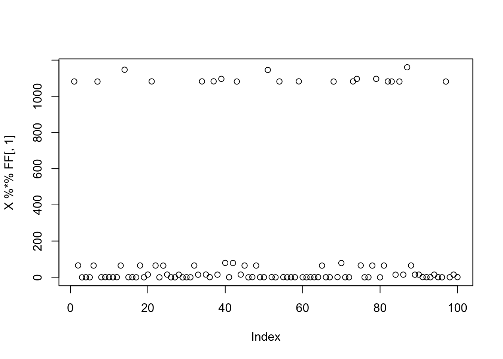
| Version | Author | Date |
|---|---|---|
| 9584c9b | Matthew Stephens | 2025-11-14 |
centered fastICA (random start)
When I initialize these new updates with a random w, it picks out a single source! (Note: in earlier tries, before the EDITs above, and in particular before the quick-and-dirty estimation of c, this did not happen.)
X1 = preprocess(X)
w = rnorm(nrow(X1))
c = 0 # this does not matter as c is updated first
res = list(w=w,c=c)
for(i in 1:100)
res = fastica_r1update_wc(X1,res$w,res$c)
cor(L,t(X1) %*% res$w) [,1]
[1,] -6.246369e-02
[2,] 6.874933e-06
[3,] 9.999997e-01plot(as.vector(t(X1) %*% res$w))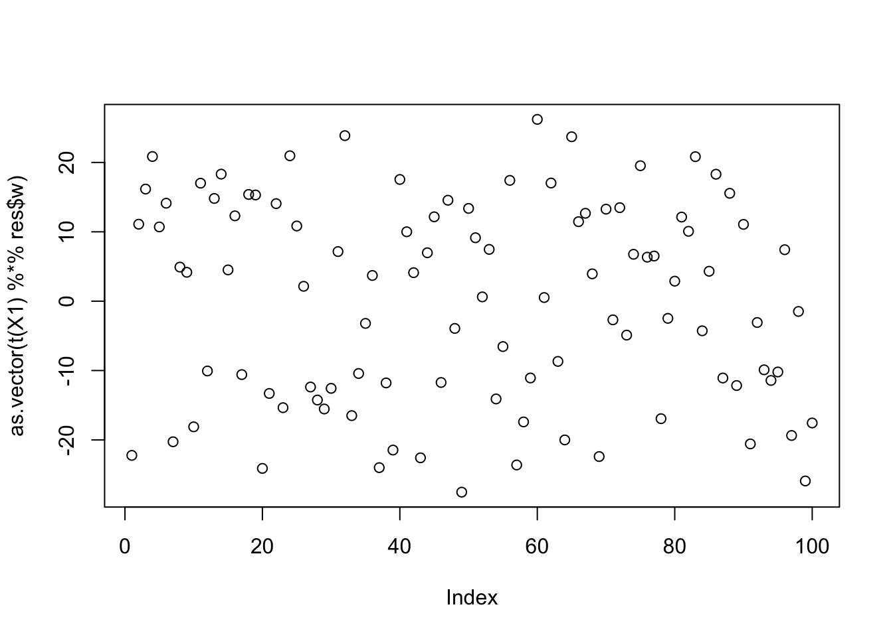
res$c[1] -0.5017599compute_objective(X1,res$w,res$c)[1] 0.5188668centered fastICA (true factor start)
Now I try initializing at (or close to) a true factor: it converges to the solution I wanted, with a similar objective function as the random start.
w = X1 %*% L[,1]
plot(t(X1) %*% w)
| Version | Author | Date |
|---|---|---|
| 9584c9b | Matthew Stephens | 2025-11-14 |
c = 0 # note this does not matter much because c gets updated first in the algorithm
res = list(w=w,c=c)
for(i in 1:100)
res = fastica_r1update_wc(X1,res$w,res$c)
cor(L,t(X1) %*% res$w) [,1]
[1,] 9.999996e-01
[2,] -1.759454e-05
[3,] -6.264399e-02plot(as.vector(t(X1) %*% res$w))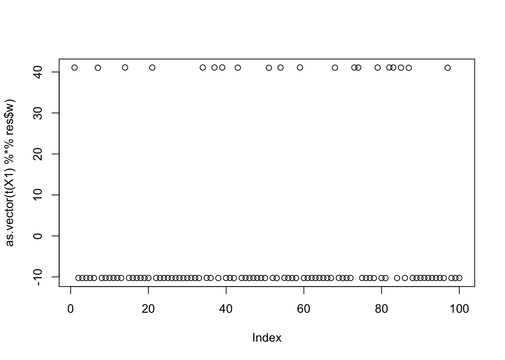
print(compute_objective(X1,res$w,res$c), digits=20)[1] 0.51871922791959368393Try initializing from a different true factor - we see the objective function is almost identical as for the first factor in this case.
w = X1 %*% L[,2]
plot(t(X1) %*% w)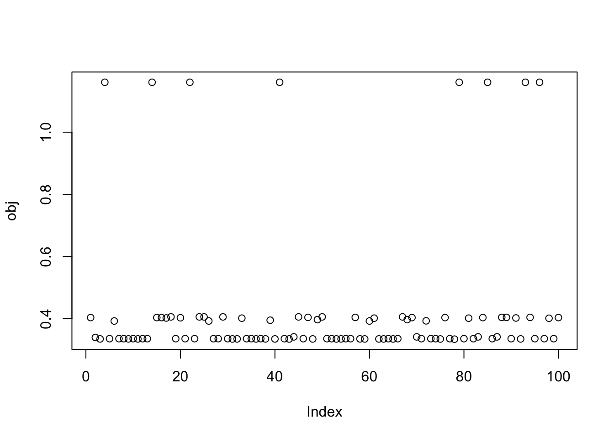
c = 0 # note this does not matter much because c gets updated first in the algorithm
res = list(w=w,c=c)
for(i in 1:100)
res = fastica_r1update_wc(X1,res$w,res$c)
cor(L,t(X1) %*% res$w) [,1]
[1,] 0.0000446438
[2,] 0.9999996967
[3,] 0.0001353547plot(as.vector(t(X1) %*% res$w))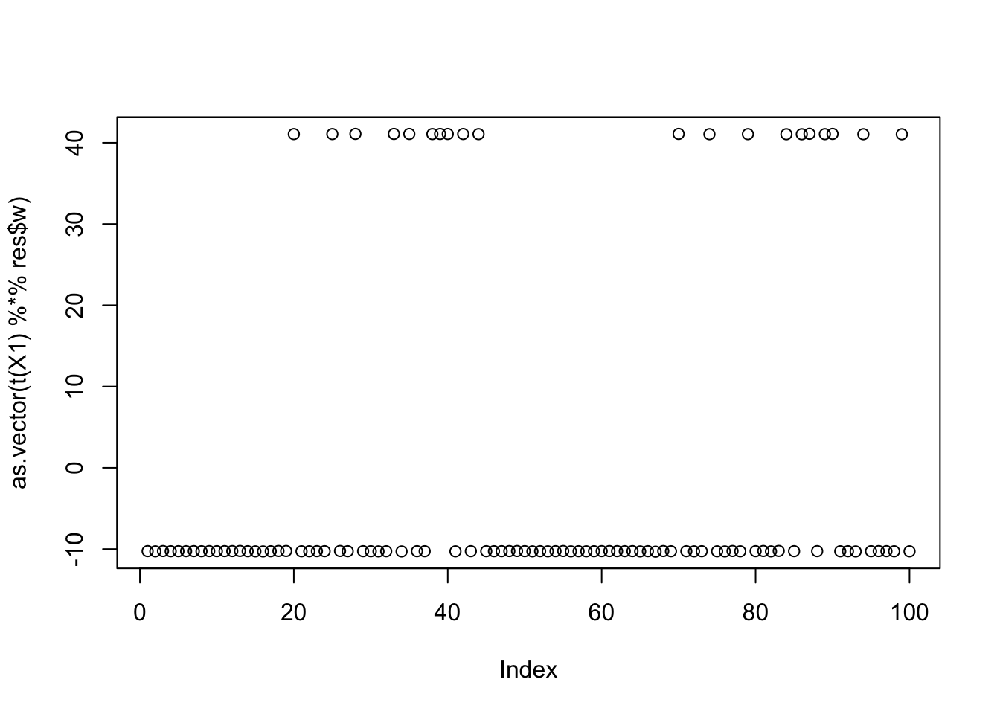
print(compute_objective(X1,res$w,res$c), digits=20)[1] 0.51930698537828645645Same for the third factor: so the objective function for all 3 factors is approximately equal. This is not a coincidence; in general the objective function for all binary factors of equal size should be approximately equal with this centering approach. (There is a question of whether the objective function favors balanced or unbalanced factors, something I need to return to. At first I thought it would always favor unbalanced, but I now believe that this may depend on \(n\) because of the constraint \(w'w=1\) (rather than \(w'w = n\)).)
w = X1 %*% L[,3]
plot(t(X1) %*% w)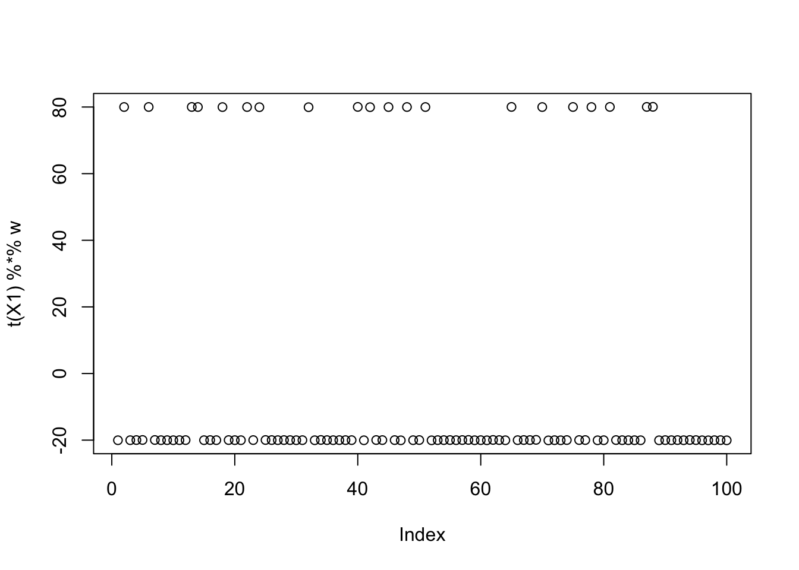
c = 0 # note this does not matter much because c gets updated first in the algorithm
res = list(w=w,c=c)
for(i in 1:100)
res = fastica_r1update_wc(X1,res$w,res$c)
cor(L,t(X1) %*% res$w) [,1]
[1,] -6.246369e-02
[2,] 6.874933e-06
[3,] 9.999997e-01plot(as.vector(t(X1) %*% res$w))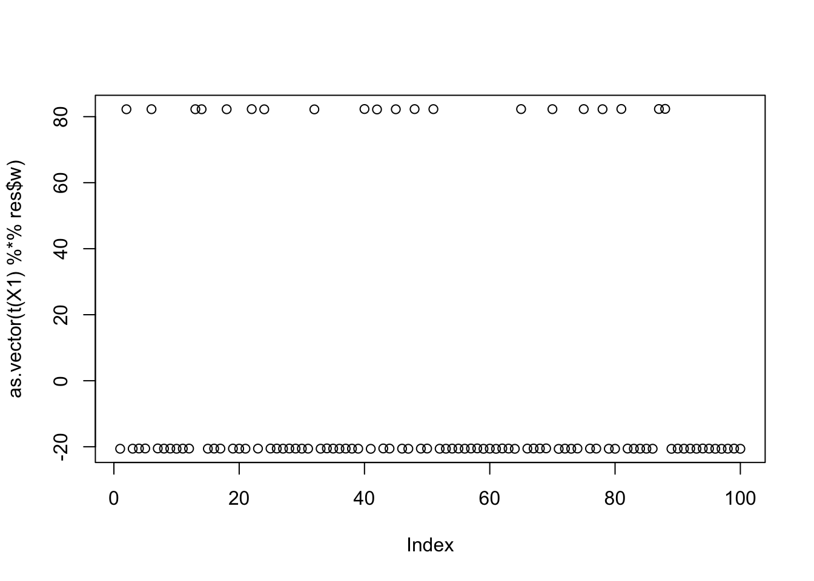
print(compute_objective(X1,res$w,res$c),digits=20)[1] 0.51886684941364447088centered fastICA (many random starts)
Here I try with 100 random starts - there are lots of different results, and some of them reach objectives similar to that from the true starts.
obj = rep(0,100)
for(seed in 1:100){
set.seed(seed)
res = list(w = rnorm(nrow(X1)), c=0)
for(i in 1:100)
res = fastica_r1update_wc(X1,res$w,res$c)
obj[seed] = compute_objective(X1,res$w,res$c)
}
plot(obj)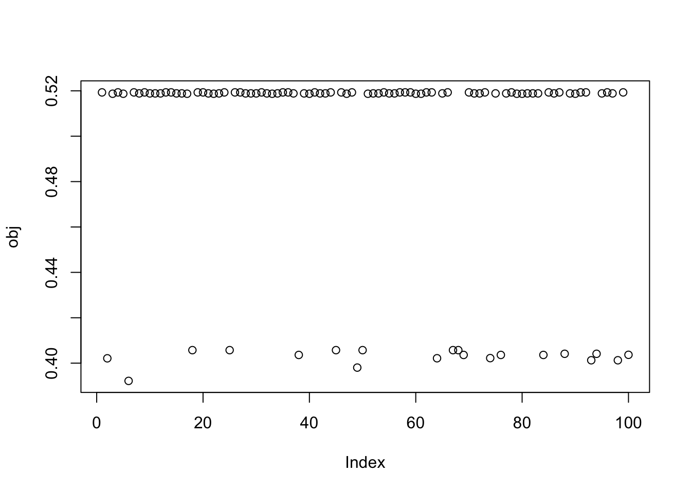
print(sort(obj,decreasing=TRUE),digits=20) [1] 0.51930698537828845485 0.51930698537828656747 0.51930698537828656747
[4] 0.51930698537828656747 0.51930698537828656747 0.51930698537828656747
[7] 0.51930698537828656747 0.51930698537828656747 0.51930698537828656747
[10] 0.51930698537828656747 0.51930698537828656747 0.51930698537828656747
[13] 0.51930698537828656747 0.51930698537828656747 0.51930698537828645645
[16] 0.51930698537828645645 0.51930698537828645645 0.51930698537828645645
[19] 0.51930698537828645645 0.51930698537828645645 0.51930698537828645645
[22] 0.51930698537828645645 0.51930698537828645645 0.51930698537828645645
[25] 0.51930698537828645645 0.51930698537828645645 0.51930698537828645645
[28] 0.51930698537828645645 0.51930698537828645645 0.51930698537828645645
[31] 0.51930698537828645645 0.51930698537828645645 0.51930698537828623440
[34] 0.51930698537828556827 0.51886684941364458190 0.51886684941364458190
[37] 0.51886684941364458190 0.51886684941364458190 0.51886684941364458190
[40] 0.51886684941364458190 0.51886684941364447088 0.51886684941364447088
[43] 0.51886684941364447088 0.51886684941364447088 0.51886684941364447088
[46] 0.51886684941364447088 0.51886684941364447088 0.51886684941364447088
[49] 0.51886684941364447088 0.51886684941364447088 0.51886684941364447088
[52] 0.51886684941364447088 0.51886684941364435986 0.51886684941364435986
[55] 0.51886684941364435986 0.51886684941364435986 0.51886684941364435986
[58] 0.51886684941364435986 0.51886684941364435986 0.51886684941364435986
[61] 0.51886684941364435986 0.51886684941364435986 0.51886684941364424883
[64] 0.51886684941364302759 0.51886684941364236145 0.51886684941364002999
[67] 0.51886684941360528001 0.51871922791959379495 0.51871922791959379495
[70] 0.51871922791959379495 0.51871922791959379495 0.51871922791959379495
[73] 0.51871922791959379495 0.51871922791959379495 0.51871922791959368393
[76] 0.51871922791959368393 0.51871922791959368393 0.51871922791959368393
[79] 0.51871922791959368393 0.51871922791959368393 0.40573162852656541322
[82] 0.40573162852656530220 0.40573162852656530220 0.40573162852656530220
[85] 0.40573162852656524668 0.40573162852656524668 0.40412605315115385229
[88] 0.40412381520672896462 0.40367461059680193047 0.40361775430260704578
[91] 0.40361771206330265827 0.40361771034898891175 0.40361770196262586330
[94] 0.40221790981214344818 0.40215685345839463638 0.40212945707550534769
[97] 0.40127191419568858377 0.40127191419555457985 0.39804479888674620947
[100] 0.39218264817917902754Close inspection of the objective values suggest that first 34 seeds find one factor, seeds 35-67 find another and 68-80 a third.
seed= order(obj,decreasing=TRUE)[1]
set.seed(seed)
res = list(w = rnorm(nrow(X1)), c=0)
for(i in 1:100)
res = fastica_r1update_wc(X1,res$w,res$c)
cor(L,t(X1) %*% res$w) [,1]
[1,] 0.0000446438
[2,] 0.9999996967
[3,] 0.0001353547plot(as.vector(t(X1) %*% res$w))
max(obj)[1] 0.519307Here is the seed for the 35th biggest objective
seed= order(obj,decreasing=TRUE)[35]
set.seed(seed)
res = list(w = rnorm(nrow(X1)), c=0)
for(i in 1:100)
res = fastica_r1update_wc(X1,res$w,res$c)
cor(L,t(X1) %*% res$w) [,1]
[1,] -6.246369e-02
[2,] 6.874933e-06
[3,] 9.999997e-01plot(as.vector(t(X1) %*% res$w))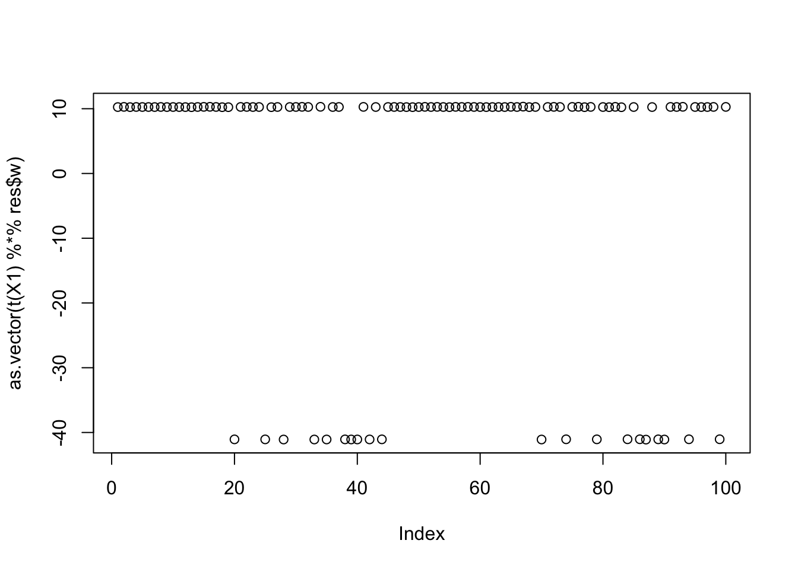
Here is the seed for the 68th biggest objective
seed= order(obj,decreasing=TRUE)[68]
set.seed(seed)
res = list(w = rnorm(nrow(X1)), c=0)
for(i in 1:100)
res = fastica_r1update_wc(X1,res$w,res$c)
cor(L,t(X1) %*% res$w) [,1]
[1,] -9.999996e-01
[2,] 1.759454e-05
[3,] 6.264399e-02plot(as.vector(t(X1) %*% res$w))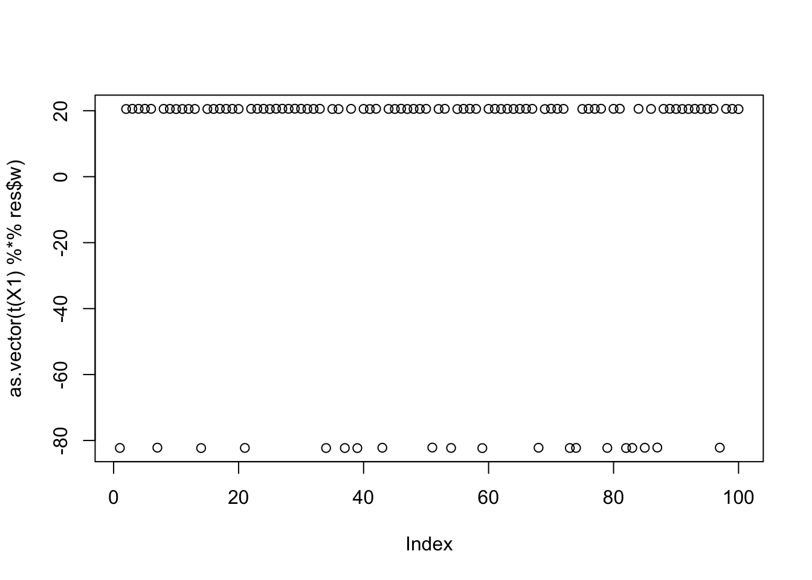
centered fastICA (PC starts)
In initial tries (before introducing checks and quick-dirty approximation for c) most random initializations did not converge well, so I experimented with different initialization strategies.
I thought maybe it could be helpful to initialize from the PCs (ie w = (1,0,0..0) etc). There are 10 of these because I’m whitening to 10 dimensions. Before my checks I found initializations using the top PCs do indeed both find a group, and a different group for each one. But now I’ve added my checks all the PCs provide a good result. Still, initializations using the top PCs might be a strategy worth keeping in mind for the future.
obj = rep(0,10)
for(pc in 1:10){
w = rep(0,10)
w[pc] = 1
res = list(w = w, c=0)
for(i in 1:100)
res = fastica_r1update_wc(X1,res$w,res$c)
obj[pc] = compute_objective(X1,res$w,res$c)
}
plot(obj)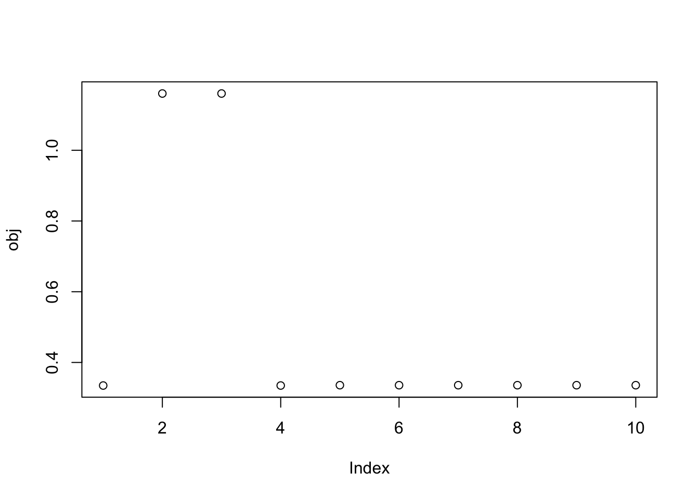
print(sort(obj,decreasing=TRUE)[1:10],digits=20) [1] 0.51930698537839492523 0.51930698537828656747 0.51930698537828656747
[4] 0.51930698537828656747 0.51930698537828656747 0.51930698537828645645
[7] 0.51886684941364458190 0.51886684941364435986 0.51886684941364435986
[10] 0.51871922791959379495Here I try random starts, but only weighting the top 3 PCs (which should be the ones with the signals). This successfully enriches for finding a good solution and these random starts do find all 3 of the different factors.
obj = rep(0,100)
for(seed in 1:100){
set.seed(seed)
res = list(w = c(rnorm(3),rep(0,7)), c=0)
for(i in 1:100)
res = fastica_r1update_wc(X1,res$w,res$c)
obj[seed] = compute_objective(X1,res$w,res$c)
}
plot(obj)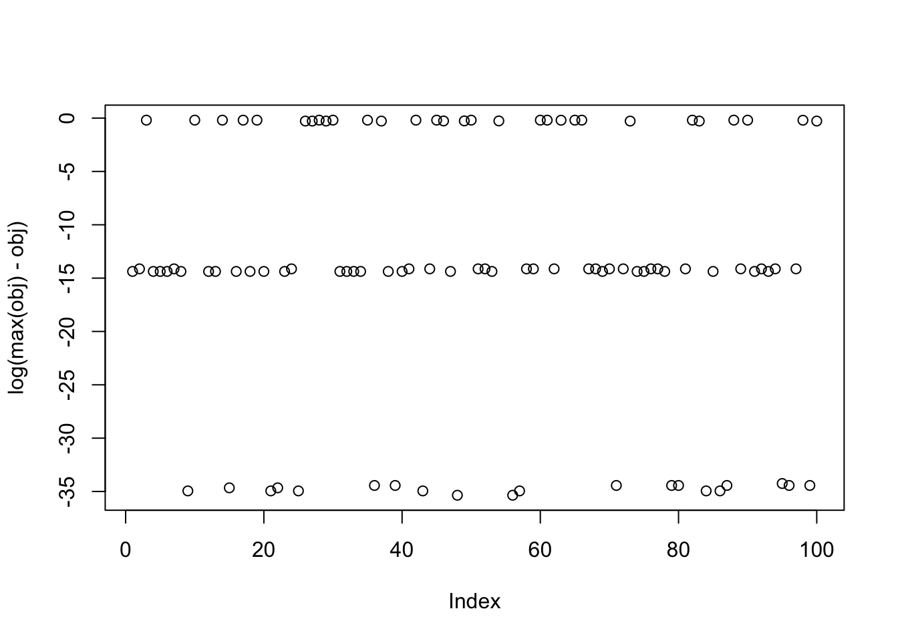
9 groups
Now I try 9 groups, with 20 members each, which should be harder.
K=9
p = 1000
n = 100
set.seed(1)
L = matrix(0,nrow=n,ncol=K)
for(i in 1:K){L[sample(1:n,20),i]=1}
FF = matrix(rnorm(p*K), nrow = p, ncol=K)
X = L %*% t(FF) + rnorm(n*p,0,0.01)
plot(X %*% FF[,1])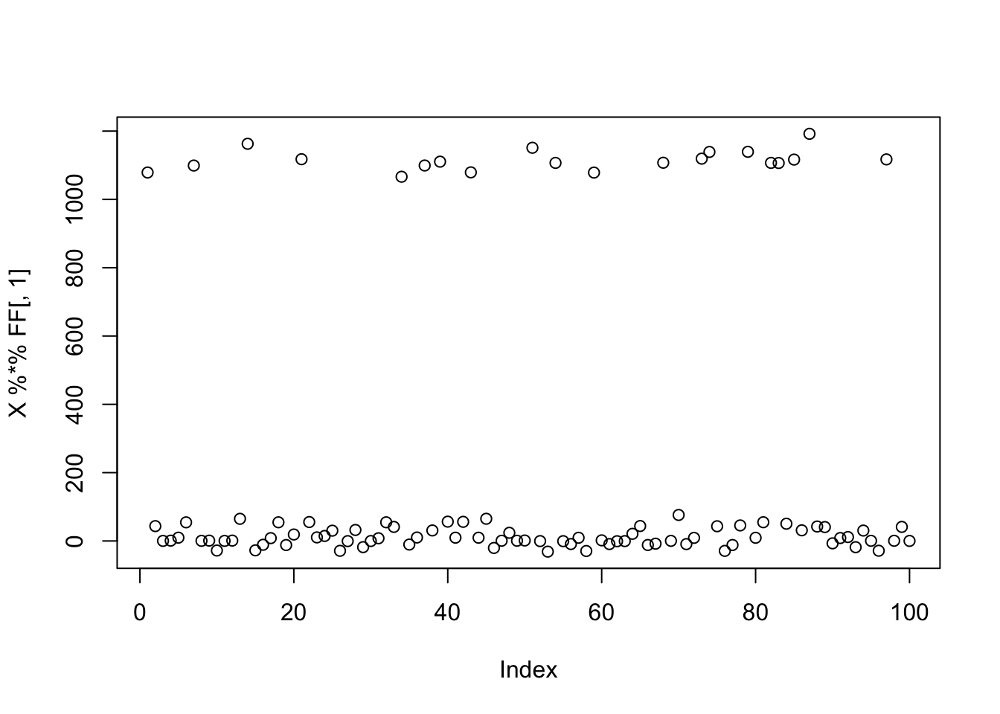
centered fastICA (random start)
Again, now that I have added checks on c, initialization to a random w picks out a single source.
X1 = preprocess(X)
w = rnorm(nrow(X1))
c = 0 # this does not matter as c is updated first
res = list(w=w,c=c)
for(i in 1:100)
res = fastica_r1update_wc(X1,res$w,res$c)
cor(L,t(X1) %*% res$w) [,1]
[1,] -2.194553e-05
[2,] -2.163660e-05
[3,] 6.260970e-02
[4,] 9.999996e-01
[5,] -6.240341e-02
[6,] 6.267150e-02
[7,] 6.258475e-02
[8,] -1.250395e-01
[9,] 6.242655e-02plot(as.vector(t(X1) %*% res$w))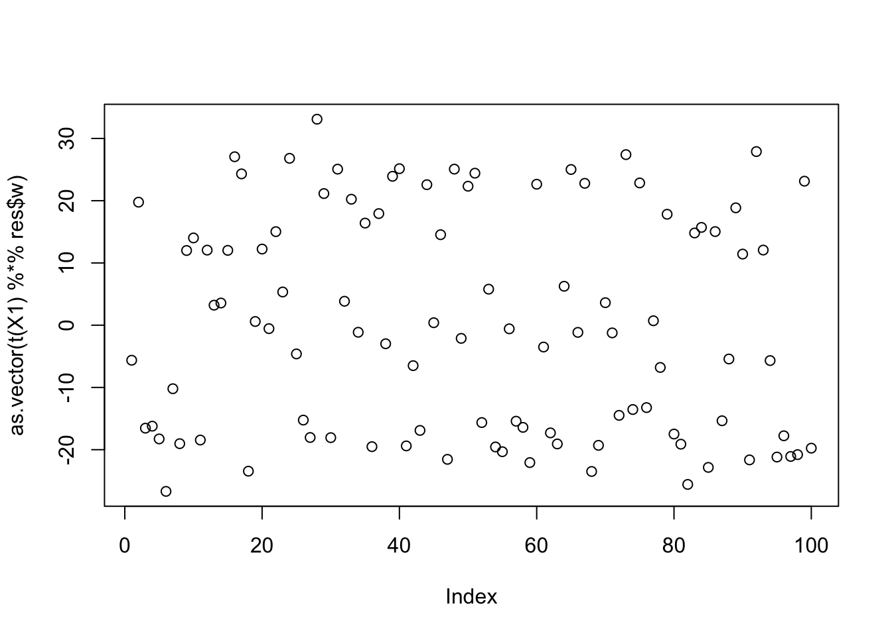
res$c[1] -0.5021346compute_objective(X1,res$w,res$c)[1] 0.5190276centered fastICA (true factor start)
Now I try initializing at (or close to) a true factor: again it converges to the solution I wanted, and has a much higher objective than then random start.
w = X1 %*% L[,1]
plot(t(X1) %*% w)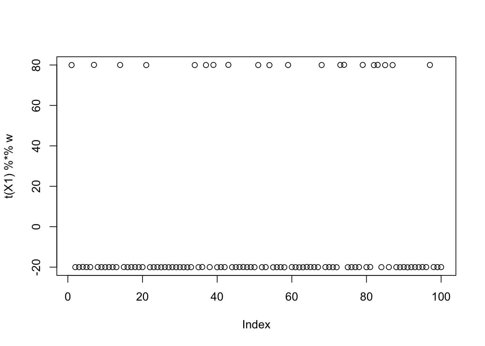
c = 0 # note this does not matter much because c gets updated first in the algorithm
res = list(w=w,c=c)
for(i in 1:100)
res = fastica_r1update_wc(X1,res$w,res$c)
cor(L,t(X1) %*% res$w) [,1]
[1,] 9.999996e-01
[2,] 1.853389e-04
[3,] -6.254243e-02
[4,] 1.938982e-05
[5,] 6.250741e-02
[6,] -5.766694e-05
[7,] -6.252991e-02
[8,] 6.266391e-02
[9,] -6.259863e-02plot(as.vector(t(X1) %*% res$w))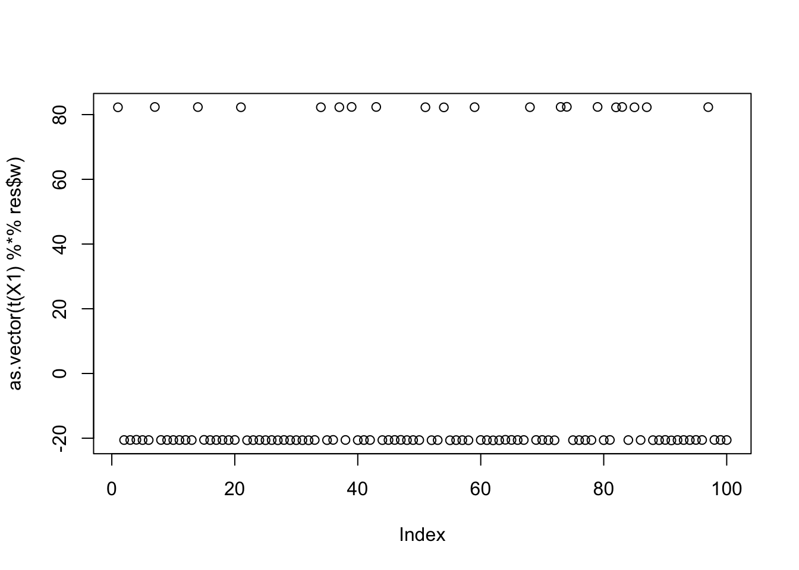
print(compute_objective(X1,res$w,res$c), digits=20)[1] 0.51910790814180762798centered fastICA (many random starts)
Here I try with 100 random starts - almost all of them reach objectives similar to that from the true starts. And we can see there seem to be 9 different solutions corresponding to the 9 groups.
obj = rep(0,100)
for(seed in 1:100){
set.seed(seed)
res = list(w = rnorm(nrow(X1)), c=0)
for(i in 1:100)
res = fastica_r1update_wc(X1,res$w,res$c)
obj[seed] = compute_objective(X1,res$w,res$c)
}
plot(obj)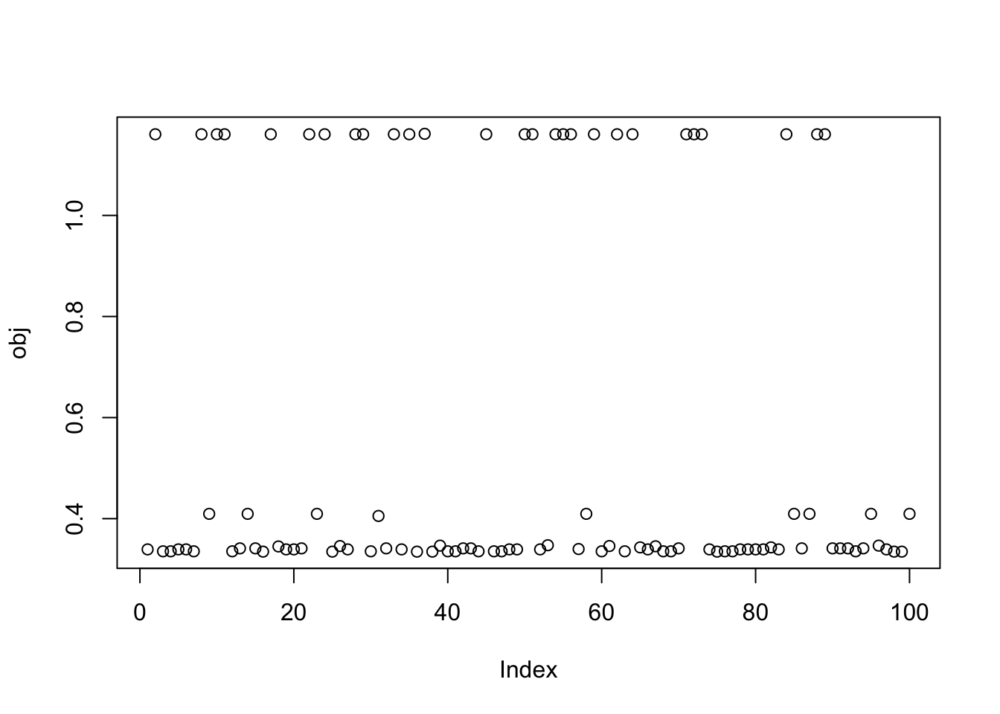
plot(sort(obj[obj>0.46]))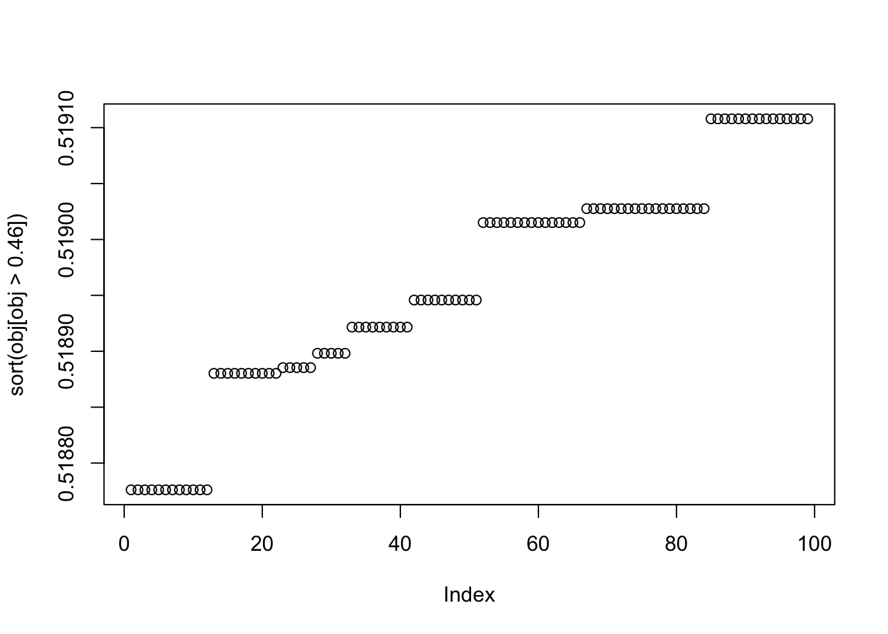
| Version | Author | Date |
|---|---|---|
| a830cac | Matthew Stephens | 2025-11-17 |
This is the top seed - finds group 1
seed= order(obj,decreasing=TRUE)[1]
set.seed(seed)
res = list(w = rnorm(nrow(X1)), c=0)
for(i in 1:100)
res = fastica_r1update_wc(X1,res$w,res$c)
cor(L,t(X1) %*% res$w) [,1]
[1,] -9.999996e-01
[2,] -1.853389e-04
[3,] 6.254243e-02
[4,] -1.938982e-05
[5,] -6.250741e-02
[6,] 5.766694e-05
[7,] 6.252991e-02
[8,] -6.266391e-02
[9,] 6.259863e-02plot(as.vector(t(X1) %*% res$w))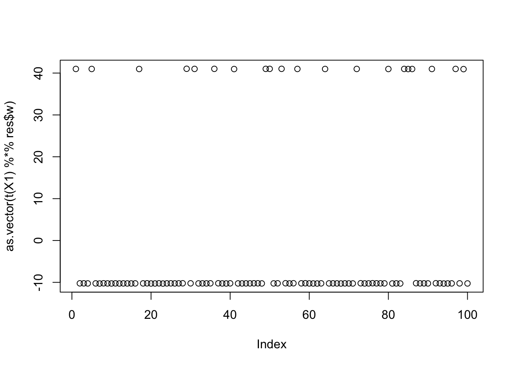
max(obj)[1] 0.5191079Here is the seed for the 20th biggest objective (finds the 4th factor)
seed= order(obj,decreasing=TRUE)[20]
set.seed(seed)
res = list(w = rnorm(nrow(X1)), c=0)
for(i in 1:100)
res = fastica_r1update_wc(X1,res$w,res$c)
cor(L,t(X1) %*% res$w) [,1]
[1,] -2.194553e-05
[2,] -2.163660e-05
[3,] 6.260970e-02
[4,] 9.999996e-01
[5,] -6.240341e-02
[6,] 6.267150e-02
[7,] 6.258475e-02
[8,] -1.250395e-01
[9,] 6.242655e-02plot(as.vector(t(X1) %*% res$w))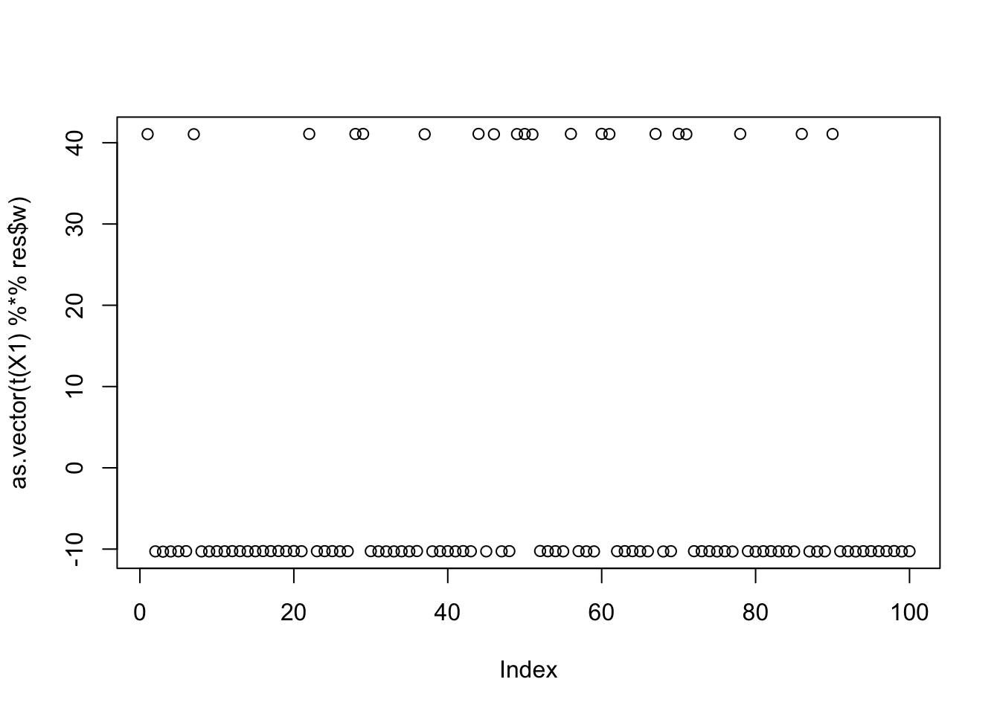
Try finding two groups
It turns out that factors 3 and 9 are not overlapping in this simulation, so I wondered whether combining them would be a good solution. Initializing at that combination does find the combined solution, but the objective is lower than for a single group because the objective favors unbalanced groups.
# show 3 and 9 are not overlapping
L[,3]*L[,9] [1] 0 0 0 0 0 0 0 0 0 0 0 0 0 0 0 0 0 0 0 0 0 0 0 0 0 0 0 0 0 0 0 0 0 0 0 0 0
[38] 0 0 0 0 0 0 0 0 0 0 0 0 0 0 0 0 0 0 0 0 0 0 0 0 0 0 0 0 0 0 0 0 0 0 0 0 0
[75] 0 0 0 0 0 0 0 0 0 0 0 0 0 0 0 0 0 0 0 0 0 0 0 0 0 0w = X1 %*% (L[,3] + L[,9])
plot(t(X1) %*% w)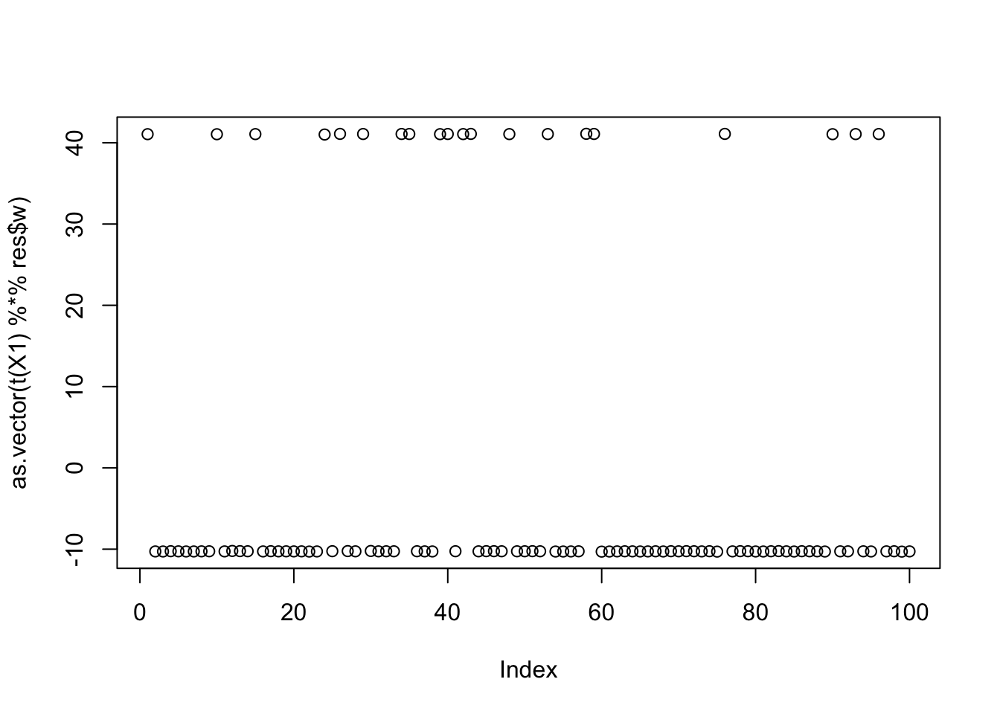
c = 0 # note this does not matter much because c gets updated first in the algorithm
res = list(w=w,c=c)
print(compute_objective(X1,res$w,res$c), digits=20)[1] 0.42683383934382418401for(i in 1:100)
res = fastica_r1update_wc(X1,res$w,res$c)
cor(L,t(X1) %*% res$w) [,1]
[1,] -0.10209488
[2,] -0.05104919
[3,] 0.61269106
[4,] 0.10209630
[5,] -0.05105701
[6,] 0.05102748
[7,] 0.10209547
[8,] 0.05123931
[9,] 0.61205320plot(as.vector(t(X1) %*% res$w))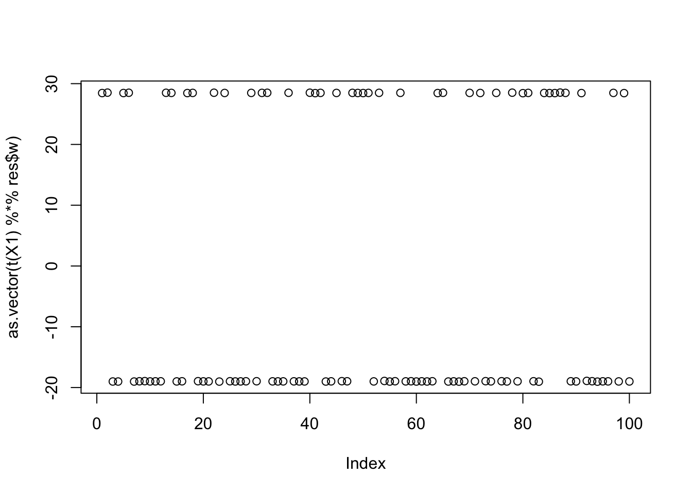
print(compute_objective(X1,res$w,res$c), digits=20)[1] 0.42186263963088549422Interestingly this seems to be an unstable solution: if I initialize nearby then it moves away to a single group.
w = X1 %*% (0.45*L[,3] + 0.55*L[,9])
plot(t(X1) %*% w)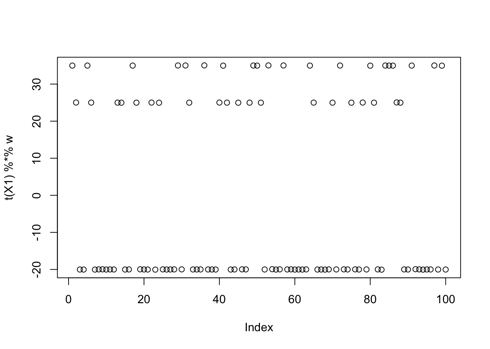
c = 0 # note this does not matter much because c gets updated first in the algorithm
res = list(w=w,c=c)
print(compute_objective(X1,res$w,res$c), digits=20)[1] 0.4231997098956051806for(i in 1:100)
res = fastica_r1update_wc(X1,res$w,res$c)
cor(L,t(X1) %*% res$w) [,1]
[1,] 6.251312e-02
[2,] -3.529253e-05
[3,] -9.999997e-01
[4,] -6.255070e-02
[5,] 5.136064e-05
[6,] -1.202743e-04
[7,] -1.873849e-01
[8,] -1.873305e-01
[9,] 2.500000e-01plot(as.vector(t(X1) %*% res$w))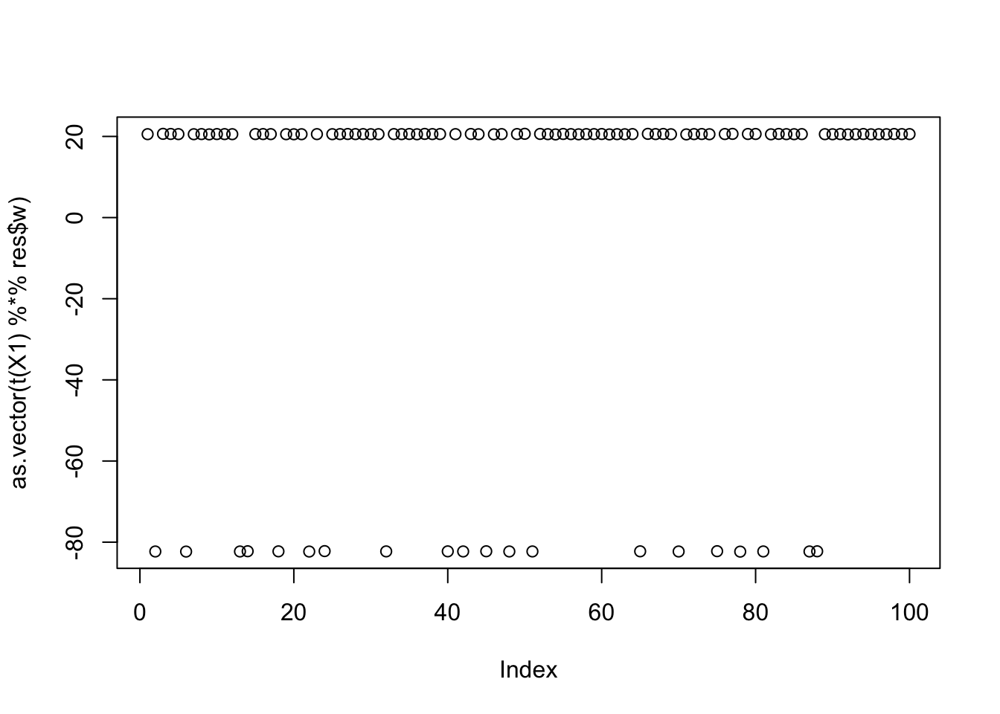
print(compute_objective(X1,res$w,res$c), digits=20)[1] 0.51892160151124533396Four non-overlapping groups
Here I look at 4 equal non-overlapping groups. I’m interested in whether it converges to a single group or a combination of groups, and whether the combination of 2 groups is a stable or unstable solution. It turns out that the majority of random starts converge to a combination of 2 groups, which is very different behavior than above. It gets me wondering whether this is because i) the non-overlapping situation, or ii) the symmetry created by the fact there are only 4 groups (2 vs 2).
set.seed(1)
n = 100
p = 1000
L = matrix(0,nrow=n,ncol=4)
L[1:25,1] = 1
L[26:50,2] = 1
L[51:75,3] = 1
L[76:100,4] = 1
FF = matrix(rnorm(p*4),nrow=p)
X = L %*% t(FF) + rnorm(n*p,0,0.01)
image(X%*% t(X))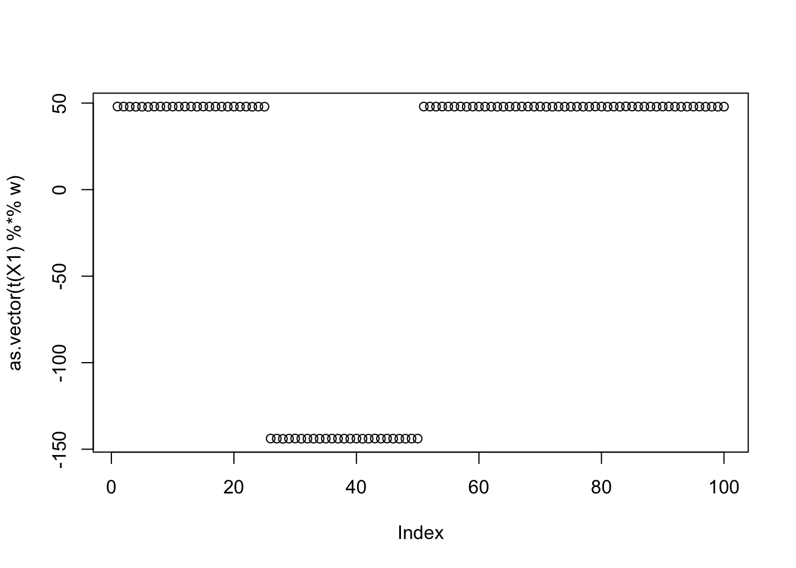
X1 = preprocess(X,n.comp=4)centered fastICA (many random starts)
Here I try with 100 random starts. Some seeds (18) find a big objective (turns out to correspond to a single group) and others find what looks like a very similar objective (turns out to correspond to a combination of two groups).
obj = rep(0,100)
for(seed in 1:100){
set.seed(seed)
res = list(w = rnorm(nrow(X1)), c=0)
for(i in 1:100)
res = fastica_r1update_wc(X1,res$w,res$c)
obj[seed] = compute_objective(X1,res$w,res$c)
}
plot(obj)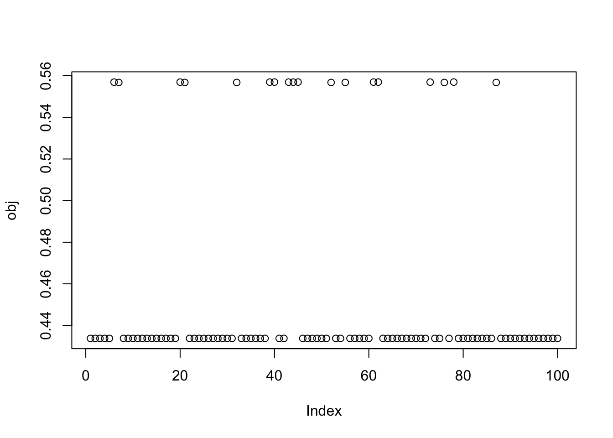
plot(sort(obj[obj>0.48]))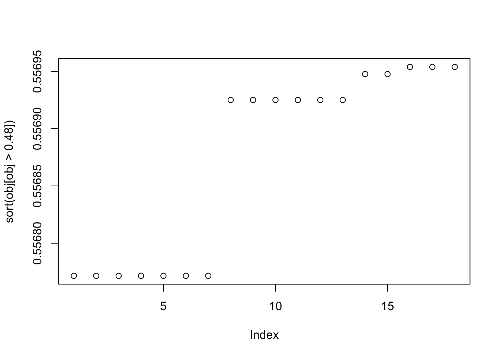
| Version | Author | Date |
|---|---|---|
| a830cac | Matthew Stephens | 2025-11-17 |
print(sort(obj,decreasing=TRUE)[1:20],digits=20) [1] 0.55695390343418005319 0.55695390343417972012 0.55695390343417883194
[4] 0.55694765457779737972 0.55694765457779682460 0.55692504937686326816
[7] 0.55692504937686315714 0.55692504937686304611 0.55692504937686304611
[10] 0.55692504937686293509 0.55692504937686293509 0.55677152073054514414
[13] 0.55677152073054492210 0.55677152073054492210 0.55677152073054470005
[16] 0.55677152073054458903 0.55677152073054447801 0.55677152073054381187
[19] 0.43378076008527427510 0.43378076008527427510Here is the seed for the biggest objective (finds factor 1)
seed= order(obj,decreasing=TRUE)[1]
set.seed(seed)
res = list(w = rnorm(nrow(X1)), c=0)
for(i in 1:100)
res = fastica_r1update_wc(X1,res$w,res$c)
cor(L,t(X1) %*% res$w) [,1]
[1,] -0.9999998
[2,] 0.3333333
[3,] 0.3333333
[4,] 0.3333332plot(as.vector(t(X1) %*% res$w))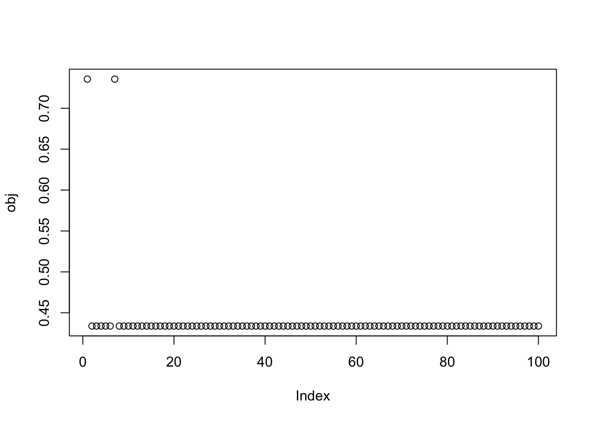
Here is the seed for the 19th biggest objective (finds two combined factors)
seed= order(obj,decreasing=TRUE)[19]
set.seed(seed)
res = list(w = rnorm(nrow(X1)), c=0)
for(i in 1:100)
res = fastica_r1update_wc(X1,res$w,res$c)
cor(L,t(X1) %*% res$w) [,1]
[1,] 0.5773502
[2,] -0.5773502
[3,] -0.5773501
[4,] 0.5773501plot(as.vector(t(X1) %*% res$w))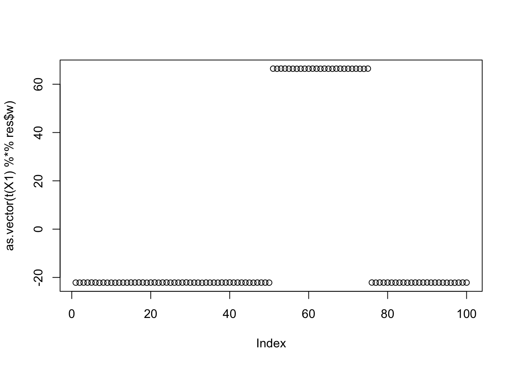
Nine non-overlapping groups
Here I look at 9 equal non-overlapping groups.
Start by creating L to be a binary matrix with 9 columns, 25*9 rows, and a single 1 in each row.
set.seed(1)
n = 225
p = 1000
L = matrix(0,nrow=n,ncol=9)
for(i in 1:9){L[((i-1)*25+1):(i*25),i] = 1}
FF = matrix(rnorm(p*9),nrow=p)
X = L %*% t(FF) + rnorm(n*p,0,0.01)
image(X%*% t(X))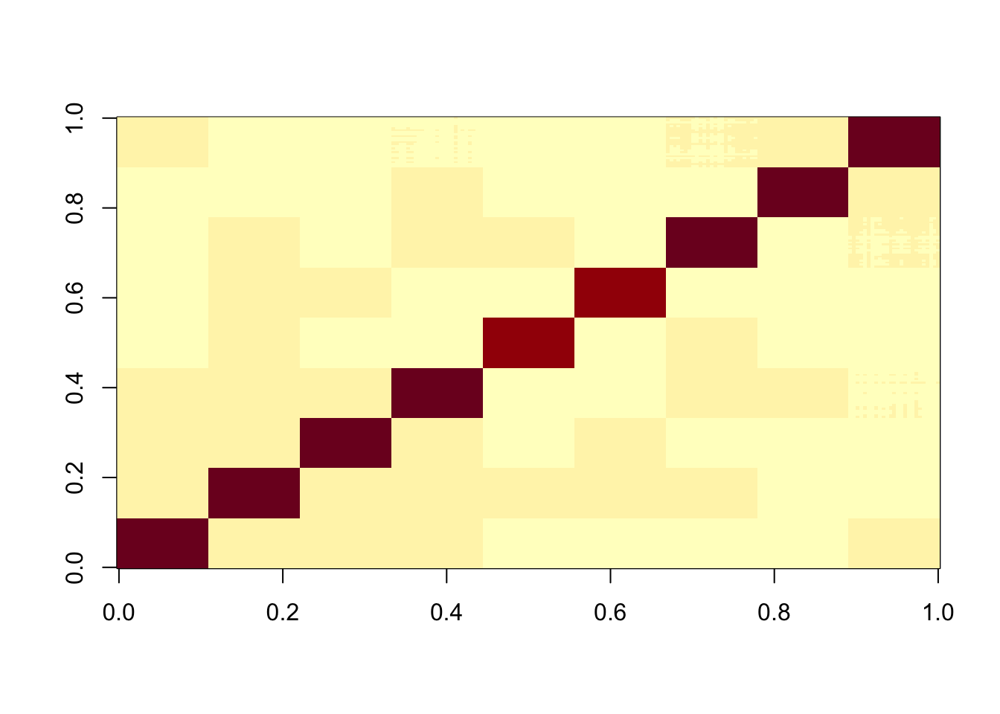
X1 = preprocess(X,n.comp=10)centered fastICA (many random starts)
Here I try with 100 random starts.
obj = rep(0,100)
for(seed in 1:100){
set.seed(seed)
res = list(w = rnorm(nrow(X1)), c=0)
for(i in 1:100)
res = fastica_r1update_wc(X1,res$w,res$c)
obj[seed] = compute_objective(X1,res$w,res$c)
}
plot(obj)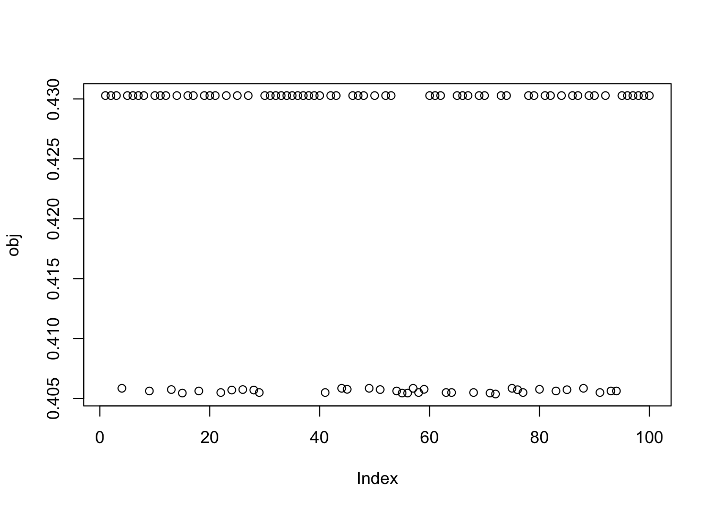
Results for the top seed: it finds a split that combines groups.
seed= order(obj,decreasing=TRUE)[1]
set.seed(seed)
res = list(w = rnorm(nrow(X1)), c=0)
for(i in 1:100)
res = fastica_r1update_wc(X1,res$w,res$c)
cor(L,t(X1) %*% res$w) [,1]
[1,] -0.3952845
[2,] -0.3952846
[3,] 0.3162277
[4,] -0.3952846
[5,] 0.3162274
[6,] -0.3952846
[7,] 0.3162276
[8,] 0.3162277
[9,] 0.3162279plot(as.vector(t(X1) %*% res$w))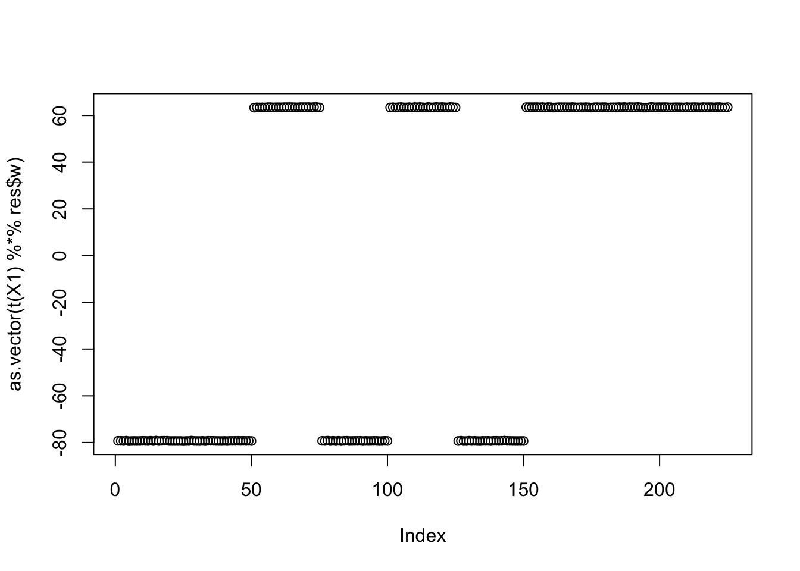
res$c[1] -0.05158043obj[seed][1] 0.4302831Here I try initializing at a single group. I discovered that the objective is actually lower than for the combined groups - so maybe this explains why it is finding the combined group result! This was a surprise to me. I should try to understand better what is going on here. One possibility is that, because we are imposing w’w = 1, the results may depend on n - as w get’s smaller, the behavior of log cosh is different. Maybe we should impose w’w = n?
w = X1 %*% L[,1]
plot(t(X1) %*% w)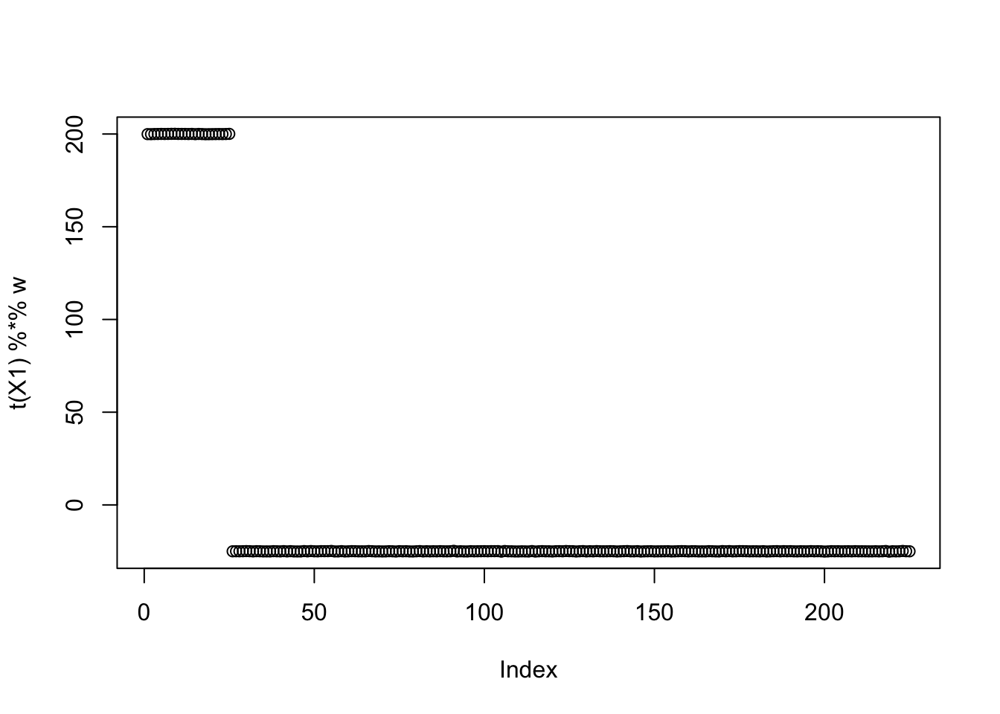
c = 0 # note this does not matter much because c gets updated first in the algorithm
res = list(w=w,c=c)
print(compute_objective(X1,res$w,res$c), digits=20)[1] 0.2920762940026140897for(i in 1:100)
res = fastica_r1update_wc(X1,res$w,res$c)
cor(L,t(X1) %*% res$w) [,1]
[1,] 0.9999996
[2,] -0.1250000
[3,] -0.1249999
[4,] -0.1249998
[5,] -0.1250000
[6,] -0.1250000
[7,] -0.1249999
[8,] -0.1250001
[9,] -0.1249999plot(as.vector(t(X1) %*% res$w))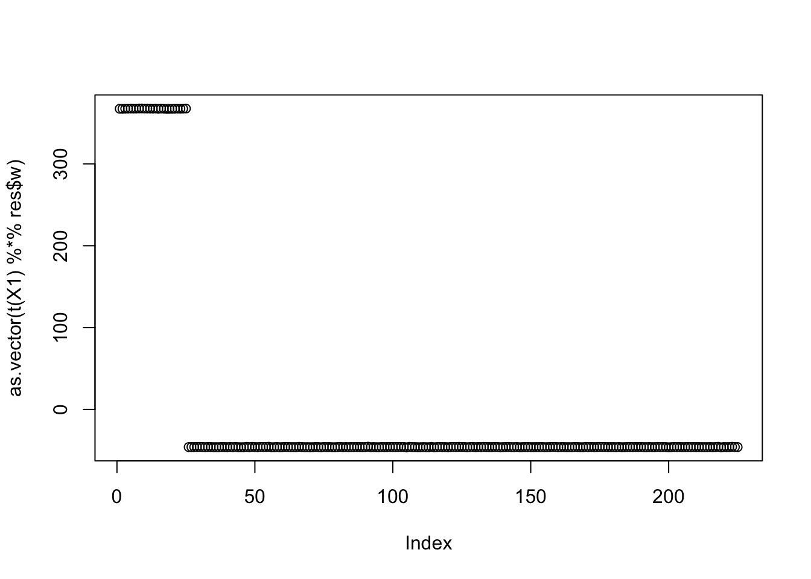
| Version | Author | Date |
|---|---|---|
| a830cac | Matthew Stephens | 2025-11-17 |
print(compute_objective(X1,res$w,res$c), digits=20)[1] 0.40575990507975584487Tree simulations
Here is a simple tree-based simulations; it’s a 4-leaf tree with two bifurcating branches.
# set up L to be a tree with 4 tips and 7 branches (including top shared branch)
set.seed(1)
n = 100
p = 1000
L = matrix(0,nrow=n,ncol=6)
L[1:50,1] = 1 #top split L
L[51:100,2] = 1 # top split R
L[1:25,3] = 1
L[26:50,4] = 1
L[51:75,5] = 1
L[76:100,6] = 1
FF = matrix(rnorm(p*6),nrow=p)
X = L %*% t(FF) + rnorm(n*p,0,0.01)
image(X%*% t(X))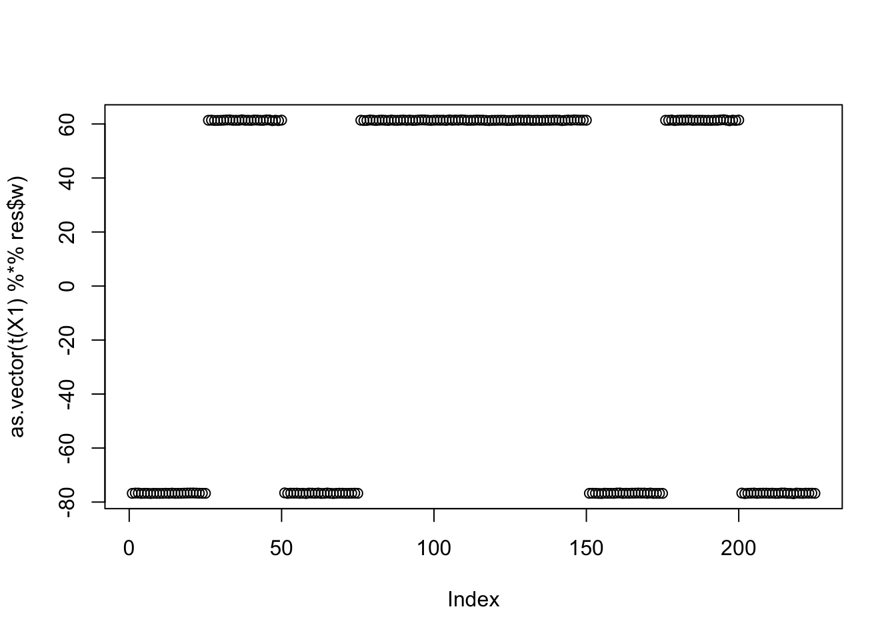
X1 = preprocess(X)Run 100 seeds, weighting only the top 3 PCs in the initialization (note: when I did the same weighting the top 4 PCs I got more mixed branch solutions). We see that the top seeds pick out a single group. Next seeds are the top branch, but then after that we have a bunch of seeds that combine two groups that are not adjacent on the tree - these solutions are less attractive to us. It would be nice to find a wy to avoid these mixed-branch solutions (or develop a filter to remove them?). One thing I don’t quite understand is that the objective for the mixed branch solutions seems to be consistently, but very slightly, lower than for the single-branch solution. That would be good to understand better.
obj = rep(0,100)
Lhat = matrix(nrow=100,ncol=n)
for(seed in 1:100){
set.seed(seed)
res = list(w = c(rnorm(3),rep(0,7)), c=0)
for(i in 1:100)
res = fastica_r1update_wc(X1,res$w,res$c)
obj[seed] = compute_objective(X1,res$w,res$c)
Lhat[seed,] = t(X1) %*% res$w
}
plot(obj)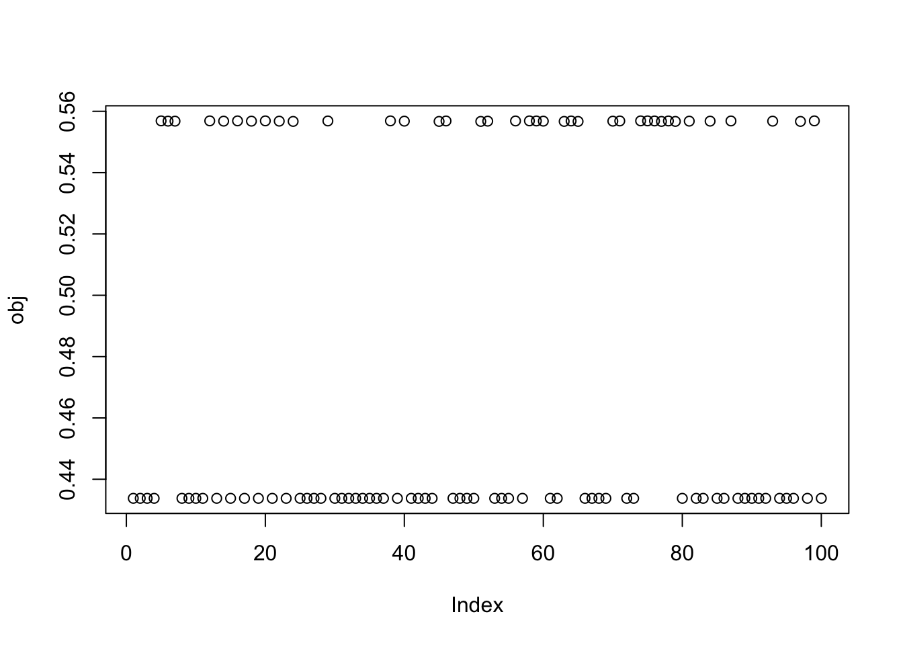
image(Lhat[order(obj,decreasing=TRUE),])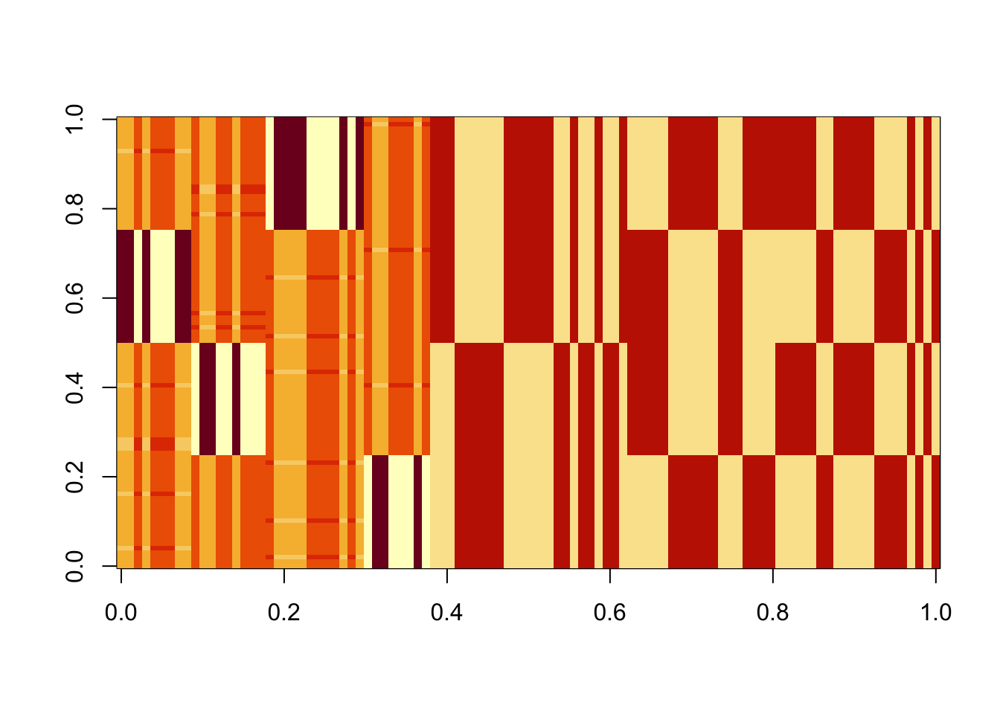
| Version | Author | Date |
|---|---|---|
| a830cac | Matthew Stephens | 2025-11-17 |
The top seed is a single group:
seed = order(obj,decreasing=TRUE)[1]
set.seed(seed)
res = list(w = c(rnorm(3),rep(0,7)), c=0)
for(i in 1:100)
res = fastica_r1update_wc(X1,res$w,res$c)
cor(L,t(X1) %*% res$w) [,1]
[1,] -0.5773502
[2,] 0.5773502
[3,] -0.3333333
[4,] -0.3333333
[5,] 0.9999998
[6,] -0.3333332plot(as.vector(t(X1) %*% res$w))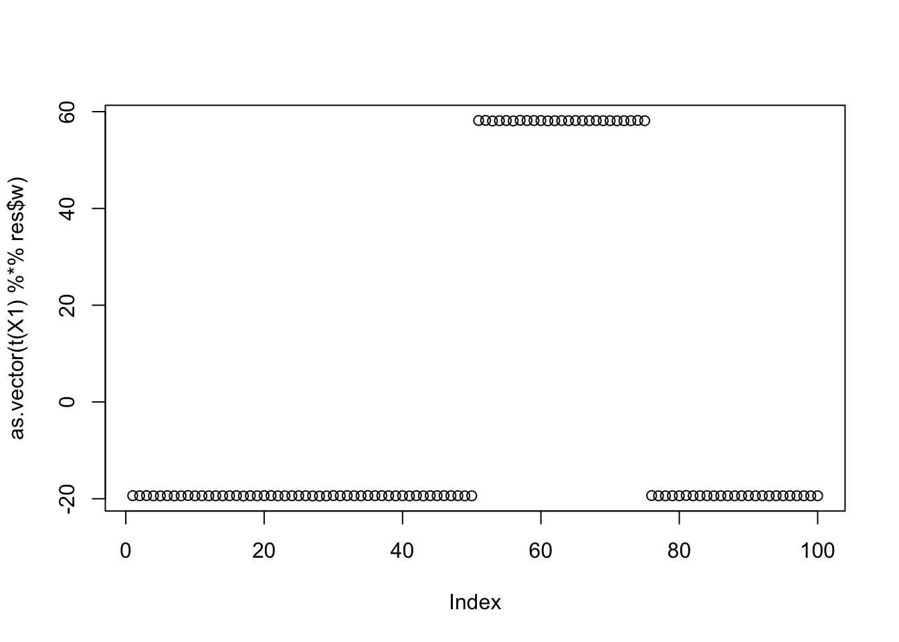
Results for the 10th biggest seed:
seed = order(obj,decreasing=TRUE)[10]
set.seed(seed)
res = list(w = c(rnorm(3),rep(0,7)), c=0)
for(i in 1:100)
res = fastica_r1update_wc(X1,res$w,res$c)
cor(L,t(X1) %*% res$w) [,1]
[1,] -0.5773502
[2,] 0.5773502
[3,] 0.3333332
[4,] -0.9999999
[5,] 0.3333333
[6,] 0.3333333plot(as.vector(t(X1) %*% res$w))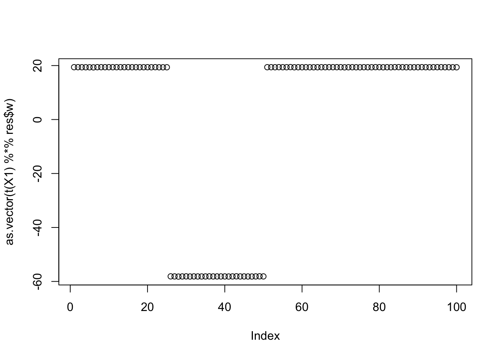
Exploratory stuff (maybe best ignored for now?)
Noting here an idea to investigate: maybe initialize w “orthogonal” to previous ones (but don’t impose orthogonality during iterations) to try to find different solutions? Here’s what I mean. The problem is that there are 5 solutions we want to find here - not sure how to try to find all of them.
set.seed(1)
w.init = c(rnorm(3),rep(0,7))
w.init = w.init - sum(w.init * res$w)/(sum(res$w^2)) * res$w
res = list(w = w.init, c=0)
for(i in 1:100)
res = fastica_r1update_wc(X1,res$w,res$c)
cor(L,t(X1) %*% res$w) [,1]
[1,] -9.728420e-09
[2,] 9.728420e-09
[3,] -5.773502e-01
[4,] 5.773502e-01
[5,] -5.773501e-01
[6,] 5.773501e-01plot(as.vector(t(X1) %*% res$w))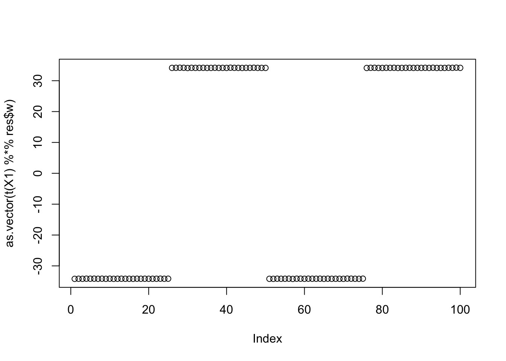
Initialize in the original space
Here I try initializing by a random linear combination of the columns of the original X. Then I choose w so that X1’ w equals this l1.
set.seed(1)
w1 = rnorm(ncol(X)) # linear comb of columns in the original space
l1 = X %*% w1
w = X1 %*% l1
w.init = w/mean(w^2)
plot(t(X1) %*% w.init, l1)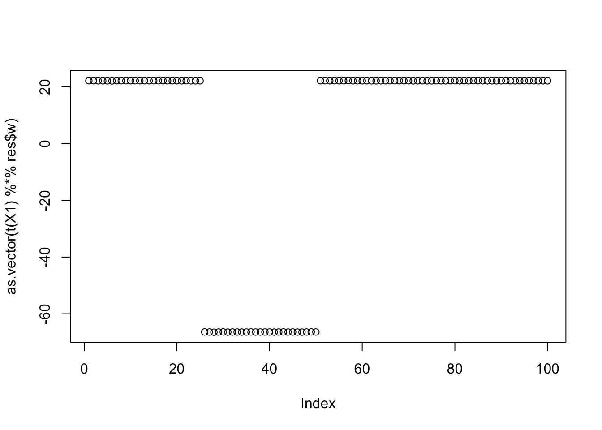
Initializing here gives the two groups.
res = list(w = w.init, c=0)
for(i in 1:100)
res = fastica_r1update_wc(X1,res$w,res$c)
cor(L,t(X1) %*% res$w) [,1]
[1,] 0.9999999
[2,] -0.9999999
[3,] 0.5773503
[4,] 0.5773502
[5,] -0.5773503
[6,] -0.5773502plot(as.vector(t(X1) %*% res$w))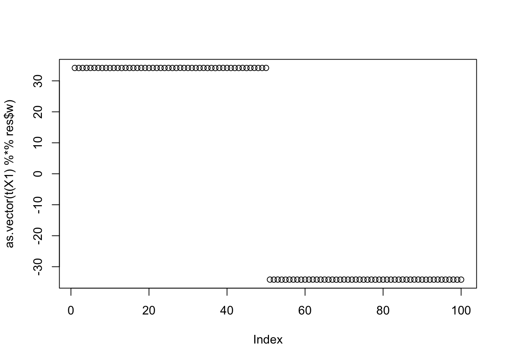
lhat = t(X1) %*% res$w
what = t(X) %*% lhat # finds an optimal w in the original spaceNow find the what in the original space that corresponds to this solution, and initialize orthogonal to what in the original space
w1 = rnorm(ncol(X))
w1 = w1 - sum(w1 * what)/(sum(what^2)) * what # orthogonal to what
l1 = X %*% w1
w = X1 %*% l1
w.init = w/mean(w^2)
plot(t(X1) %*% w.init, l1)
Running from this one produces a mixed group. And this seems to happen repeatedly with this strategy. Need to investigate this more carefully.
res = list(w = w.init, c=0)
for(i in 1:100)
res = fastica_r1update_wc(X1,res$w,res$c)
cor(L,t(X1) %*% res$w) [,1]
[1,] -8.913989e-09
[2,] 8.913989e-09
[3,] 5.773502e-01
[4,] -5.773502e-01
[5,] -5.773502e-01
[6,] 5.773502e-01plot(as.vector(t(X1) %*% res$w))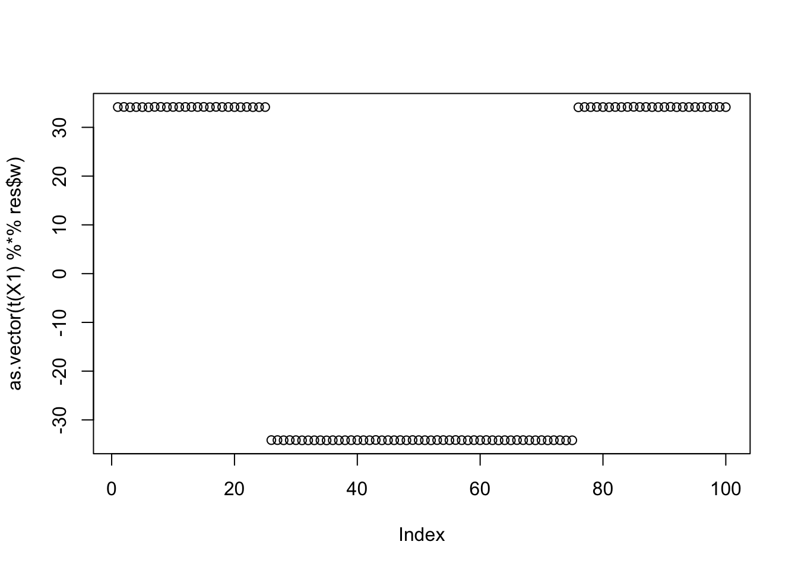
sessionInfo()R version 4.4.2 (2024-10-31)
Platform: aarch64-apple-darwin20
Running under: macOS Sequoia 15.6.1
Matrix products: default
BLAS: /Library/Frameworks/R.framework/Versions/4.4-arm64/Resources/lib/libRblas.0.dylib
LAPACK: /Library/Frameworks/R.framework/Versions/4.4-arm64/Resources/lib/libRlapack.dylib; LAPACK version 3.12.0
locale:
[1] en_US.UTF-8/en_US.UTF-8/en_US.UTF-8/C/en_US.UTF-8/en_US.UTF-8
time zone: America/Chicago
tzcode source: internal
attached base packages:
[1] stats graphics grDevices utils datasets methods base
loaded via a namespace (and not attached):
[1] vctrs_0.6.5 cli_3.6.5 knitr_1.50 rlang_1.1.6
[5] xfun_0.52 stringi_1.8.7 promises_1.3.3 jsonlite_2.0.0
[9] workflowr_1.7.1 glue_1.8.0 rprojroot_2.0.4 git2r_0.35.0
[13] htmltools_0.5.8.1 httpuv_1.6.15 sass_0.4.10 rmarkdown_2.29
[17] evaluate_1.0.4 jquerylib_0.1.4 tibble_3.3.0 fastmap_1.2.0
[21] yaml_2.3.10 lifecycle_1.0.4 whisker_0.4.1 stringr_1.5.1
[25] compiler_4.4.2 fs_1.6.6 Rcpp_1.0.14 pkgconfig_2.0.3
[29] rstudioapi_0.17.1 later_1.4.2 digest_0.6.37 R6_2.6.1
[33] pillar_1.10.2 magrittr_2.0.3 bslib_0.9.0 tools_4.4.2
[37] cachem_1.1.0